Galaxy Code Architecture
Contributors
Questions
How is the Galaxy code structured?
What do the various other projects related to Galaxy do?
What happens when I start Galaxy?
Objectives
Explore various aspects of the Galaxy codebase.
Understand the various top-level files and modules in Galaxy.
Understand how dependencies work in Galaxy’s frontend and backend.
layout: true left-aligned class: left, middle
layout: true class: center, middle
layout: introduction_slides topic_name: Galaxy Architecture
Galaxy Architecture
Please Interrupt!
We’re here to answer your questions about Galaxy architecture!
class: enlarge200
Chat: galaxyproject Lobby
GitHub: github.com/galaxyproject
Twitter: #usegalaxy, @galaxyproject
The /galaxyproject projects
The architecture of the ecosystem.
Speaker Notes
Too many to cover all but we’ll cover some of the big ones in a few big categories. User-facing applications, projects for Galaxy plugin developers, and projects for Galaxy administrators.
Lots of Gitter actually
https://gitter.im/galaxyproject
More links we’ll mention as we go through the slides:
- https://matrix.to/#/#galaxyproject_Lobby:gitter.im
- https://matrix.to/#/#galaxyproject_dev:gitter.im
- https://matrix.to/#/#galaxyproject_admins:gitter.im
- https://matrix.to/#/#galaxyproject_FederatedGalaxy:gitter.im
- https://matrix.to/#/#galaxyproject_bioblend:gitter.im
- https://matrix.to/#/#galaxyproject_ephemeris:gitter.im
- https://matrix.to/#/#usegalaxy-eu_Lobby:gitter.im
- https://matrix.to/#/#galaxy-iuc_iuc:gitter.im
- https://matrix.to/#/#bgruening_docker-galaxy-stable:gitter.im
- https://matrix.to/#/#Galaxy-Training-Network_Lobby:gitter.im
- https://matrix.to/#/#biocontainers_Lobby:gitter.im
- https://matrix.to/#/#bioconda_Lobby:gitter.im
Working group chats linked at https://galaxyproject.org/community/wg/.
class: enlarge200
User-Facing Applications
class: enlarge150
The main Galaxy application.
Web interface, database model, job running, etc…
Also includes other web applications including the ToolShed.
class: enlarge150
CloudLaunch web application to make it easy to launch images on a cloud, drives https://launch.usegalaxy.org
class: enlarge150
galaxyproject/training-material

Galaxy training material for scientists, developers, and admins. Powers https://training.galaxyproject.org/.
class: enlarge150
The Galaxy Hub is the community and documentation hub for the Galaxy Project. It is maintained by the community through this GitHub repository. It is a static website built using the metalsmith static site generator.
Powers https://galaxyproject.org/.
class: enlarge150
Official Python client for the Galaxy, ToolShed, and CloudMan APIs.
Best documented path to scripting the Galaxy API.
class: enlarge150
Galaxy API bindings for other languages, less actively maintained.
class: enlarge150
Galaxy CloudMan - a web application which manages a Galaxy Kubernetes cluster in the cloud.
class: enlarge150
bgruening/docker-galaxy-stable
High quality Docker containers for stable Galaxy environments.
Releases corresponding to each new version of Galaxy.
Many flavors available.
class: white
class: enlarge200
For Plugin Developers
Galaxy tools maintained by the IUC (“Intergalactic Utilities Commission”).
A variety of tools, generally of high quality including many of the core tools for Galaxy main.
Demonstrates current tool development best practices - development on github and then deployed to test/main ToolSheds
Many older tools appearing on usegalaxy.org.
Tools Aside - More Repositories
Other repositories with high quality tools:
- Björn Grüning’s repo
- Peter Cock’s repos:
- ENCODE tools
- Biopython repo
- Galaxy Proteomics repo
- Greg von Kuster’s repo
- TGAC repo
- AAFC-MBB Canada repo
- Mark Einon’s repo
Intergalactic Workflow Commission. Hosting workflows and defining best practices for publishing workflows.
https://matrix.to/#/#galaxyproject_iwc:gitter.im
class: enlarge150
Command-line utilities to assist in the development of Galaxy tools and workflows. Linting, testing, deploying to ToolSheds…
The best practice approach for Galaxy tool development!
Builds Galaxy environments for Galaxy tool development including Docker container, virtual machines, Google compute images
galaxyproject/galaxy-language-server

Language server implementation for Galaxy tools. Visual Studio Code extension for tool development.
Test execution, code completion, best practices, documentation tooltips, etc..
class: enlarge150

Build Galaxy framework dependencies as Python wheels when needed.
class: enlarge150

Provides stable URLs and caching for application links, etc.. An important layer for reproducibility but largely transparent.
class: enlarge200
For Deployers and Admins
class: enlarge150
galaxyproject/{ansible-*, *-playbook}
usegalaxy-eu/{ansible-*, *-playbook}
Ansible components to automate almost every aspect of Galaxy installation and maintenance.
Ansible is an advanced configuration management system
These playbooks are used to maintain Galaxy main, cloud and Docker images, virtual machines, …
class: enlarge150
A process manager (supervisor) and management tools for Galaxy servers.
galaxyctl which is used to manage the starting, stopping, and logging of Galaxy’s various processes.
galaxy which can be used to run a Galaxy server in the foreground.
class: enlarge150
Kubernetes helm chart for deploying Galaxy. Leveraged by cloudlaunch and CloudMan but usable standalone.
class: enlarge150

Distributed job execution engine for Galaxy.
Stages data, scripts, configuration.
Can run jobs on Windows machines.
Can act as its own queuing system or access an existing cluster DRM.
class: enlarge150
Library and CLI for managing Galaxy plugins - tools, index data, and workflows.
Layer on top of BioBlend building useful utilities for working with the Galaxy API from an administrator perspective.
class: enlarge150
Handy command-line utility for Galaxy administrators.
class: enlarge150
ephemeris vs gxadmin
Ephemeris generally talks to the Galaxy API and is a pure Python project, gxadmin talks directly to the Galaxy database and relevant files.
Total Perspective Vortex
galaxyproject/total-perspective-vortex **

TotalPerspectiveVortex (TPV) provides an installable set of dynamic rules for the Galaxy application that can route entities (Tools, Users, Roles) to appropriate job destinations based on a configurable yaml file.
class: enlarge150

Django-based infrastructure for creating pools of users, etc.. for training events and connecting them to Galaxy.
Some (out of many) friends of the project


Check out dev training materials “Tool Dependencies and Conda” and “Tool Dependencies and Containers” for more context.
Putting it all together

Speaker Notes
TODO: cover gxformat2
class: enlarge200
The rest of the slides will focus on the core repository.
Project Management
The social architecture of the project.
class: enlarge200
Contributing Quick Start
Contribution guidelines: https://bit.ly/gx-CONTRIBUTING-md
class: enlarge200
Pull Requests
Nearly all changes should come in through GitHub Pull Requests.
The exceptions include security patches, packaging and release process artifacts, and backporting fixes to older releases.
class: enlarge150
Security (SECURITY_POLICY.md)
In brief, to responsibly report security issues e-mail
galaxy-committers@lists.galaxyproject.org
Check out the full policy in SECURITY_POLICY.md.
Branches
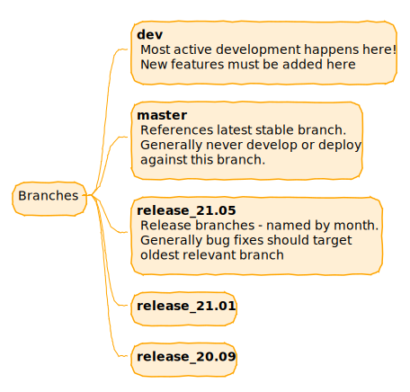
class: enlarge150
Committers & Open Goverance
All repository goverance is done in the open on GitHub via Pull Requests and voting. Galaxy goes beyond open source to open goverance.
“The committers group is the group of trusted developers and advocates who manage the core Galaxy code base.”
“Galaxy Project committers are the only individuals who may commit to the core Galaxy code base.”
“Committers may participate in all formal votes, including votes to modify team membership, merge pull requests, and modify [policies].”
class: enlarge150
Working Groups
https://galaxyproject.org/community/wg/
“Galaxy has grown a lot over the years, going from a project at one university in 2005 to the global community it is today. Several parts of the Galaxy ecosystem have become avowedly and obviously community driven during that time, including tools, code, training, and several other international efforts. Galaxy Working Groups push this global model to other areas of Galaxy as well.”
class: enlarge200
Code of Conduct (CODE_OF_CONDUCT.md)
Describes expectations, encourages diversity, and describes how to report issues such as unacceptable behavior.
Check out the full policy in CODE_OF_CONDUCT.md.
class: enlarge150
Release Process
New large releases are issued roughly every 4 months. The process is guided by an auto-created self documenting release issue.
Check out the 21.05 release issue as an example.
Working groups create roadmaps aligned with each release and coordinated with project leadership.
class: enlarge150
Organizing Issues and Pull Requests
Extensive use of Github tags are used to try to organize the numerous issues and pull requests of the Galaxy repository.
The tags are described in detail in issues.rst.
Continuous Integration (CI)
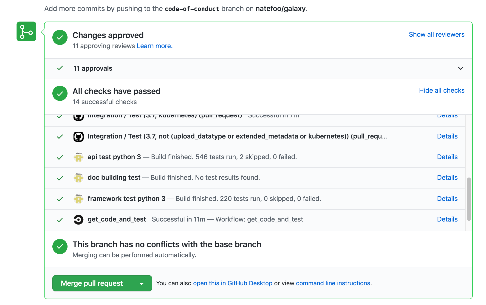
If you get Red Xs - take a second to ponder whether they make sense and don’t be afraid to ask, it is a complex system with a lot of noise!
Linting and Code Formatting
Part of the Galaxy CI process includes linting and checking the format of both the backend Python and frontend ES 6 code. This linting process captures many common problems as well as enforcing a common code style.
The output reports from the CI process are relatively straightforward, but it is a good process to lint changes and formatting your code before opening pull requests for them.
Execute the format make command to format the backend code and then use tox
to lint the formatted code.
$ make format
$ tox -e lint
Execute the client-format make command to format the code and then the client-lint command
to lint the formatted code.
$ make client-format
$ make client-lint
mypy and Python Types
Starting with release 21.01, portions of the Galaxy backend have Python 3 type annotations and static checking is performed as part of CI. Imported library types are not enforcing and mypy does a fair job inferring types in most situations, so this process should be relatively transparent to contributors.
If there are problems with typing, the CI produces explicit output about how to correct problems. These problems generally just require a single type annotation. Feel free to request help on a pull request for what that should look like.
To run a subset of the python type checking locally, tox again can
be used:
$ tox -e mypy
A quick overview about why to add type annotations to Python code and how to use them can be found on this blog post. Additional useful resources include this cheat sheet from mypy and the Python docs for the typing module.
class: enlarge200
Development Environments
Galaxy developers use a wide range of IDEs and we don’t offer any formal recommendation of one over another.
However, Marius has assembled some documentation on debugging the Galaxy server and tests using VS Code.
Development Environment - Gitpod
Galaxy does have a Gitpod configuration that is enabled to allow editing and testing PRs https://www.gitpod.io/.
Video from Marius presenting Gitpod at the Galaxy Developer Roundtable (https://www.youtube.com/watch?v=3e71DFg3gsw#t=39m0s)
docs.galaxyproject.org
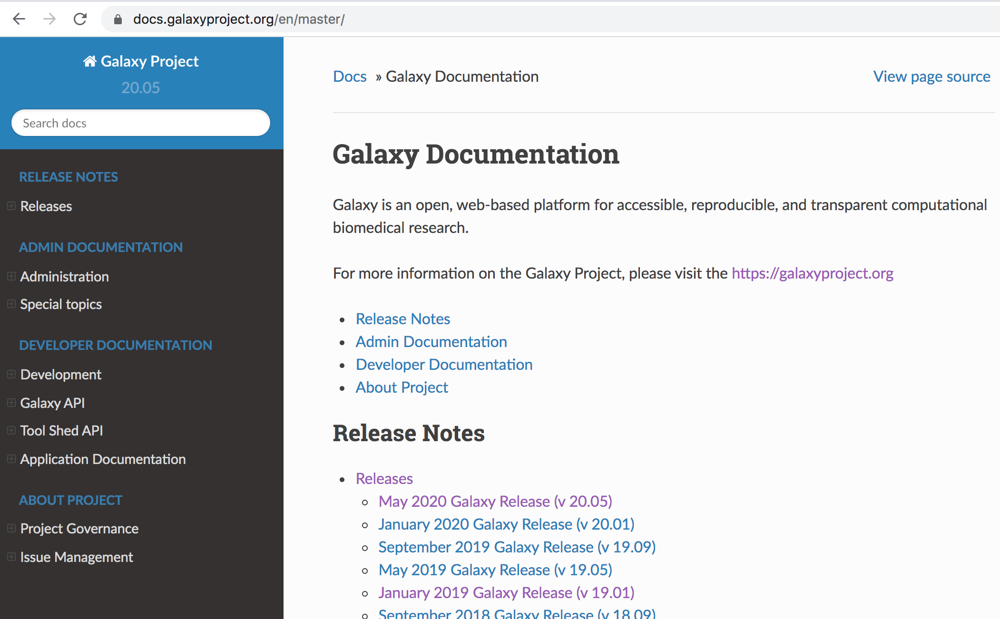
All these documents as well as versions code and deployment documentation and release notes can be found at docs.galaxyproject.org.
Principles
The guiding principles of the core code architecture.
Aspirational Principles of Galaxy Architecture
Whereas the architecture of the frontend (Web UI) aims for consistency and is highly opinionated, the backend (Python server) is guided by flexibility and is meant to be driven by plugins whenever possible.
Speaker Notes
Though an imperfect abstraction… maybe it is beneficial to think of the organizational principles that guide frontend and backend development of Galaxy as diametrically opposite.
The frontend architecture is guided by the principle that the end user experience should be as simple and consistent as possible. The backend has been deployed at so many different sites and targeting so many different technologies - that flexibility is paramount.
An Opinionated Frontend
- The target audience is a bench scientist - no knowledge of programming, paths, or command lines should be assumed.
- Consistent colors, fonts, themes, etc…
- Reusable components for presenting common widgets - from the generic (forms and grids) to the specific (tools and histories).
- Tied to specific technologies:
A Plugin Driven Backend
Galaxy’s backend is in many ways driven by pluggable interfaces and can be adapted to many different technologies.
- SQLAlchemy allows using SQLite, PostgreSQL, or MySQL (sort of) for your database.
- Many different cluster backends or job managers are supported.
- Different frontend proxies (e.g. nginx) are supported as well as web application containers (e.g. uWSGI, gunicorn).
- Different storage strategies and technologies are supported (e.g. S3, iRODS).
- Tool definitions, job metrics, stat middleware, tool dependency resolution, workflow modules, datatype definitions are all plugin driven.
Speaker Notes
If the chief architectural principle guiding the frontend is a fast and accessible experience for the bench scientist, perhaps for the backend it is allowing deployment on many different platforms and a different scales.
A Plugin Driven Backend but…
Galaxy has long been guided by the principle that cloning it and calling
the run.sh should “just work” and should work quickly.
So by default Galaxy does not require:
- Compilation - it fetches binary wheels for your platform.
- A job manager - Galaxy can act as one.
- An external database server - Galaxy can use an sqlite database.
- A web proxy or external Python web server.
class: enlarge200
In other words…
The Galaxy frontend is architected with the bench scientist in mind first and foremost, the Galaxy backend is architected with Galaxy administrators in mind first and foremost.
Speaker Notes
TODO: slide connecting architecture to people here
Files and Directories
The physical architecture of the Galaxy code.
Project Docs
Code
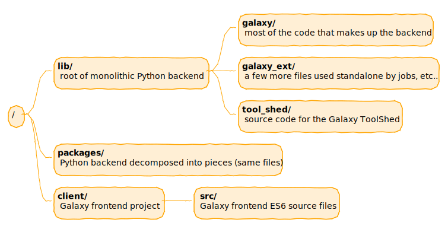
Scripts
Test Sources
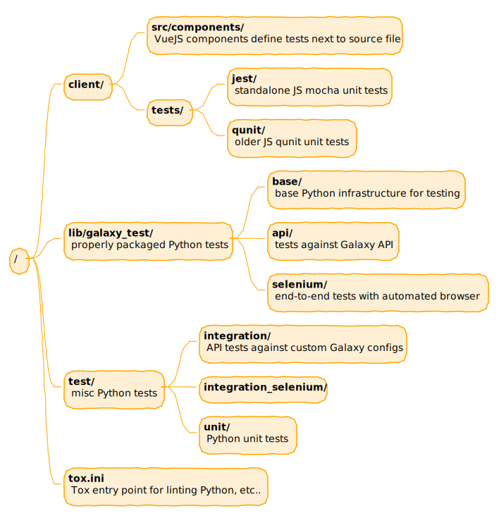
Continuous Integration
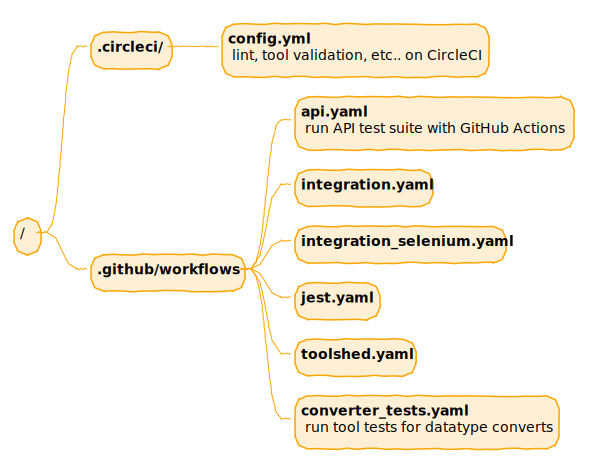
One Repository, Two Views of a Project
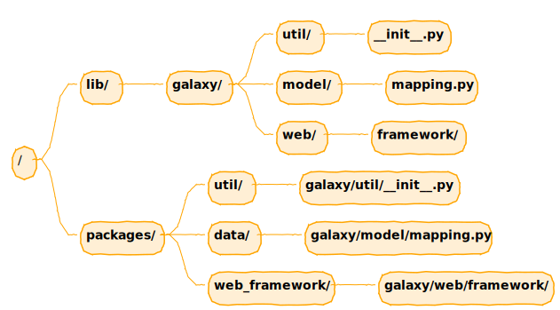
lib contains a single monolithic view of the galaxy namespace.
Each sub-directory of packages contains a logical subset of this galaxy namespace. Directory symbolic links are used to ensure the same files are used.
Speaker Notes
TODO: a slide before this one describing Python modules and how they map to files using galaxy.util, galaxy.model.mapping, and galaxy.web.framework.
Package Structure
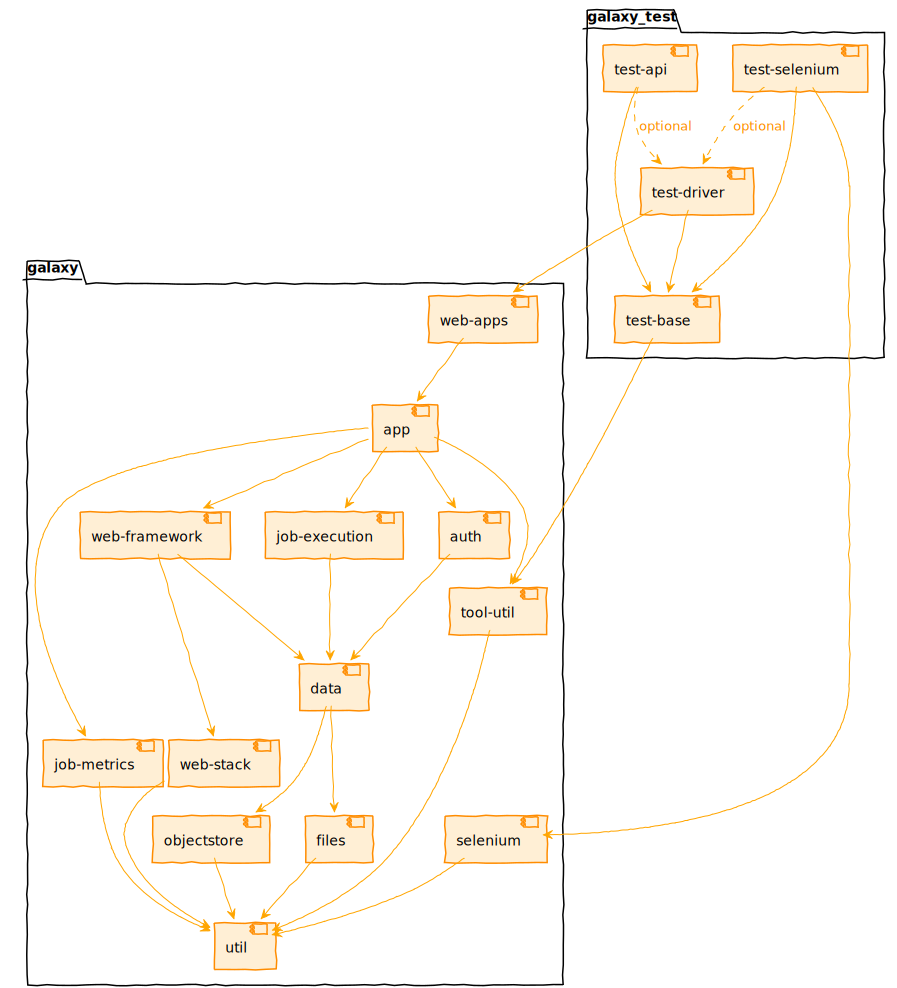
PyPI
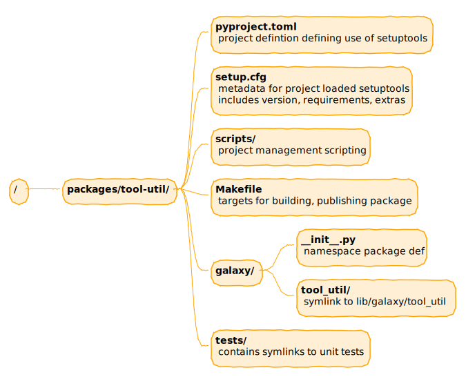
Web Frameworks
The architecture of an interaction.
class: reduce70
Bits and pieces of older client technologies appear throughout - ranging from Python mako templates to generate HTML, lower-level jQuery, and lots of Backbone legacy MVC.
Expanding the right side of that diagram. We will move through the components left to right.
class: enlarge120 template: left-aligned
ASGI - Application
Spiritual successor to
WSGI. An ASGI application
is an async callable that takes in a scope (dict describing the
connection), send (an async callable to respond to events via),
and receive (an async callable to receive messages).
async def application(scope, receive, send):
event = await receive()
...
await send({"type": "http.response.body", ...})
Checkout ASGI documentation for more details.
template: left-aligned
ASGI & Starlette Low-level Example
We will talk a lot about Galaxy and FastAPI - but much of its plumbing is just aliases for starlette ASGI handling.
from starlette.responses import PlainTextResponse
async def app(scope, receive, send):
assert scope['type'] == "http"
response = PlainTextResponse('Hello, world!')
await response(scope, receive, send)
If this is placed in a file called example.py with Starlette on
the Python path, the application server uvicorn can then host this
application with the following shell command:
$ uvicorn example:app
INFO: Started server process [11509]
INFO: Uvicorn running on http://127.0.0.1:8000 (Press CTRL+C to quit)
Example from starlette.io.
template: left-aligned
ASGI - Starlette High-level Example
Building a higher-level example.py with Starlette.
from starlette.applications import Starlette
from starlette.responses import JSONResponse
from starlette.routing import Route
async def homepage(request):
return JSONResponse({'hello': 'world'})
app = Starlette(debug=True, routes=[
Route('/', homepage),
])
A small framework for building web applications.
template: left-aligned
ASGI - FastAPI
From https://github.com/tiangolo/fastapi/blob/master/fastapi/applications.py
...
from starlette.applications import Starlette
...
class FastAPI(Starlette):
...
FastAPI (the library and the application base) extends starlette framework with features for building APIs. These include data validation, serialization, documentation generation.
template: left-aligned
FastAPI __call__
https://github.com/tiangolo/fastapi/blob/master/fastapi/applications.py
async def __call__(self, scope: Scope, receive: Receive, send: Send) -> None:
if self.root_path:
scope["root_path"] = self.root_path
if AsyncExitStack:
async with AsyncExitStack() as stack:
scope["fastapi_astack"] = stack
await super().__call__(scope, receive, send)
else:
await super().__call__(scope, receive, send) # pragma: no cover
A light wrapper around Starlette’s call entry point.
template: left-aligned
Starlette __call__
https://github.com/encode/starlette/blob/master/starlette/applications.py
async def __call__(self, scope: Scope, receive: Receive, send: Send) -> None:
scope["app"] = self
await self.middleware_stack(scope, receive, send)
Walks through Starlette middleware.
template: left-aligned
Starlette build_middleware_stack
https://github.com/encode/starlette/blob/master/starlette/applications.py
def build_middleware_stack(self) -> ASGIApp:
...
app = self.router
for cls, options in reversed(middleware):
app = cls(app=app, **options)
return app
Start with the router and surround it with each layer of configured middleware.
template: left-aligned class: enlarge150
ASGI Middleware
It is possible to have ASGI “middleware” - code that plays the role of both server and application, taking in a scope and the send/receive awaitable callables, potentially modifying them, and then calling an inner application.
https://asgi.readthedocs.io/en/latest/specs/main.html#middleware
template: left-aligned class: enlarge150
Starlette Middleware
Starlette includes several middleware classes for adding behavior that is applied across your entire application. These are all implemented as standard ASGI middleware classes, and can be applied either to Starlette or to any other ASGI application.
https://www.starlette.io/middleware/
template: left-aligned
Starlette build_middleware_stack
https://github.com/encode/starlette/blob/master/starlette/applications.py
def build_middleware_stack(self) -> ASGIApp:
...
app = self.router
for cls, options in reversed(middleware):
app = cls(app=app, **options)
return app
Notice the inner most layer is the router.
template: left-aligned
FastAPI Router Initialization
https://github.com/tiangolo/fastapi/blob/master/fastapi/applications.py
class FastAPI(Starlette):
def __init__(self, ...):
self.router: routing.APIRouter = routing.APIRouter(
routes=routes,
)
FastAPI Router
from starlette import routing
class APIRouter(routing.Router):
...
Starlette Router
https://github.com/encode/starlette/blob/master/starlette/routing.py
async def __call__(self, scope: Scope, receive: Receive, send: Send) -> None:
...
for route in self.routes:
# Determine if any route matches the incoming scope,
# and hand over to the matching route if found.
match, child_scope = route.matches(scope)
if match == Match.FULL:
scope.update(child_scope)
await route.handle(scope, receive, send)
return
...
https://www.starlette.io/routing/
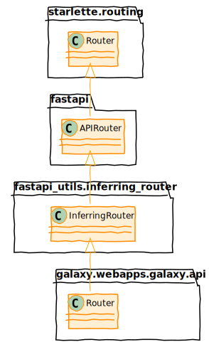
- https://www.starlette.io/routing/
- https://fastapi.tiangolo.com/tutorial/bigger-applications/#apirouter
- https://fastapi-utils.davidmontague.xyz/user-guide/inferring-router/
class: enlarge200
In order to understand how the routing classes are setup within Galaxy, lets step back and look really quickly at how Galaxy’s FastAPI application (ASGI endpoint) is constructed.
FastAPI Factory
lib/galaxy/webapps/galaxy/fast_factory.py
def factory():
props = WebappSetupProps(
app_name='galaxy',
default_section_name=DEFAULT_CONFIG_SECTION,
env_config_file='GALAXY_CONFIG_FILE',
env_config_section='GALAXY_CONFIG_SECTION',
check_galaxy_root=True
)
config_provider = WebappConfigResolver(props)
config = config_provider.resolve_config()
gx_webapp, gx_app = app_pair(
global_conf=config.global_conf,
load_app_kwds=config.load_app_kwds,
wsgi_preflight=config.wsgi_preflight
)
return initialize_fast_app(gx_webapp, gx_app)
FastAPI Application
lib/galaxy/webapps/galaxy/fast_app.py
def initialize_fast_app(gx_webapp, gx_app):
app = FastAPI(
title="Galaxy API",
docs_url="/api/docs",
openapi_tags=api_tags_metadata,
)
add_exception_handler(app)
add_galaxy_middleware(app, gx_app)
add_request_id_middleware(app)
include_all_package_routers(app, 'galaxy.webapps.galaxy.api')
wsgi_handler = WSGIMiddleware(gx_webapp)
app.mount('/', wsgi_handler)
return app
Finding API Routers
Following this line:
include_all_package_routers(app, 'galaxy.webapps.galaxy.api')
to the file
lib/galaxy/webapps/base/api.py
def include_all_package_routers(app: FastAPI, package_name: str):
for _, module in walk_controller_modules(package_name):
router = getattr(module, "router", None)
if router:
app.include_router(router)
class: reduce70
Routing inside the Application
router = Router(tags=['tags'])
@router.cbv
class FastAPITags:
manager: TagsManager = depends(TagsManager)
@router.put(
'/api/tags',
summary="Apply a new set of tags to an item.",
status_code=status.HTTP_204_NO_CONTENT,
)
def update(
self,
trans: ProvidesUserContext = DependsOnTrans,
payload: ItemTagsPayload = Body(
..., # Required
title="Payload",
description="Request body containing the item and the tags to be assigned.",
),
):
"""Replaces the tags associated with an item with the new ones specified in the payload.
- The previous tags will be __deleted__.
- If no tags are provided in the request body, the currently associated tags will also be __deleted__.
"""
self.manager.update(trans, payload)
- https://www.starlette.io/routing/
- https://fastapi.tiangolo.com/tutorial/bigger-applications/#apirouter
- https://fastapi-utils.davidmontague.xyz/user-guide/inferring-router/
WSGI Fallback
Back to initialize_fast_app, two of the final lines were as follows:
wsgi_handler = WSGIMiddleware(gx_webapp)
app.mount('/', wsgi_handler)
This effectively provides a fallback to our legacy WSGI application.
WSGI
- Python interface for web servers defined by PEP 333 - https://www.python.org/dev/peps/pep-0333/.
- Galaxy tends to favor uWSGI, but other options such as Gunicorn and Paste can be used to host the application.
- https://uwsgi-docs.readthedocs.io/ (a million bells and whistles, highly performant, a bit brittle)
- https://gunicorn.org/ (simpler, more standard Python 3 WSGI server)
- https://bitbucket.org/ianb/paste (more of legacy interest, but still heavily used in testing for instance)
template: left-aligned
WSGI Middleware
A WSGI function:
def app(environ, start_response):
- Middleware act as filters, modify the
environand then pass through to the next webapp - Galaxy uses several middleware components defined in the
wrap_in_middlewarefunction ofgalaxy.webapps.galaxy.buildapp.
template: left-aligned
Galaxy’s WSGI Middleware
Middleware configured in galaxy.webapps.galaxy.buildapp#wrap_in_middleware.
paste.httpexceptions#make_middlewaregalaxy.web.framework.middleware.remoteuser#RemoteUser(if configured)paste.recursive#RecursiveMiddlewaregalaxy.web.framework.middleware.sentry#Sentry(if configured)- Various debugging middleware (linting, interactive exceptions, etc…)
galaxy.web.framework.middleware.statsd#StatsdMiddleware(if configured)galaxy.web.framework.middleware.xforwardedhost#XForwardedHostMiddlewaregalaxy.web.framework.middleware.request_id#RequestIDMiddleware
Instances
Classes
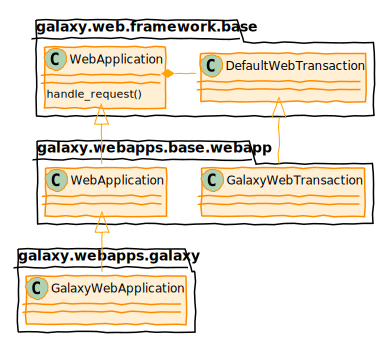
template: left-aligned
Routes
Setup on webapp in galaxy.webapps.galaxy.buildapp.py.
webapp.add_route(
'/datasets/:dataset_id/display/{filename:.+?}',
controller='dataset', action='display',
dataset_id=None, filename=None
)
URL /datasets/278043/display matches this route, so handle_request will
- lookup the controller named “dataset”
- look for a method named “display” that is exposed
- call it, passing dataset_id and filename as keyword arg
Uses popular Routes library (https://pypi.python.org/pypi/Routes).
template: left-aligned
Simplified handle_request from lib/galaxy/web/framework/base.py.
def handle_request(self, environ, start_response):
path_info = environ.get( 'PATH_INFO', '' )
map = self.mapper.match( path_info, environ )
if path_info.startswith('/api'):
controllers = self.api_controllers
else:
controllers = self.controllers
trans = self.transaction_factory( environ )
controller_name = map.pop( 'controller', None )
controller = controllers.get( controller_name, None )
# Resolve action method on controller
action = map.pop( 'action', 'index' )
method = getattr( controller, action, None )
kwargs = trans.request.params.mixed()
# Read controller arguments from mapper match
kwargs.update( map )
body = method( trans, **kwargs )
# Body may be a file, string, etc... respond with it.
class: enlarge150
Controllers
Three varieties
- FastAPI ASGI API controllers
- WSGI API controllers
- Legacy WSGI web controllers.
Ideally each of these are thin. Focused on “web things” - adapting parameters and responses and move “business logic” to components not bound to web functionality.
class: enlarge150
FastAPI Controllers
- Found in
lib/galaxy/webapps/galaxy/controllers/api/. - Consume and produce typed data using Python 3 type annotations, FastAPI helpers, and Pydantic models.
- Router specifies HTTP verb (GET, POST, PUT, etc..) and how to parse path.
class: reduce70
FastAPI Controller Example
lib/galaxy/webapps/galaxy/controllers/api/roles.py
@router.cbv
class FastAPIRoles:
role_manager: RoleManager = depends(RoleManager)
@router.get('/api/roles')
def index(self, trans: ProvidesUserContext = DependsOnTrans) -> RoleListModel:
roles = self.role_manager.list_displayable_roles(trans)
return RoleListModel(__root__=[role_to_model(trans, r) for r in roles])
@router.get('/api/roles/{id}')
def show(self, id: EncodedDatabaseIdField, trans: ProvidesUserContext = DependsOnTrans) -> RoleModel:
role_id = trans.app.security.decode_id(id)
role = self.role_manager.get(trans, role_id)
return role_to_model(trans, role)
@router.post("/api/roles", require_admin=True)
def create(self, trans: ProvidesUserContext = DependsOnTrans, role_definition_model: RoleDefinitionModel = Body(...)) -> RoleModel:
role = self.role_manager.create_role(trans, role_definition_model)
return role_to_model(trans, role)
class: reduce70
FastAPI and Pydantic
RoleIdField = Field(title="ID", description="Encoded ID of the role")
RoleNameField = Field(title="Name", description="Name of the role")
RoleDescriptionField = Field(title="Description", description="Description of the role")
class BasicRoleModel(BaseModel):
id: EncodedDatabaseIdField = RoleIdField
name: str = RoleNameField
type: str = Field(title="Type", description="Type or category of the role")
class RoleModel(BasicRoleModel):
description: str = RoleDescriptionField
url: str = Field(title="URL", description="URL for the role")
model_class: str = Field(title="Model class", description="Database model class (Role)")
class RoleDefinitionModel(BaseModel):
name: str = RoleNameField
description: str = RoleDescriptionField
user_ids: Optional[List[EncodedDatabaseIdField]] = Field(title="User IDs", default=[])
group_ids: Optional[List[EncodedDatabaseIdField]] = Field(title="Group IDs", default=[])
FastAPI and OpenAPI
FastAPI(title="Galaxy API", docs_url="/api/docs", ...)

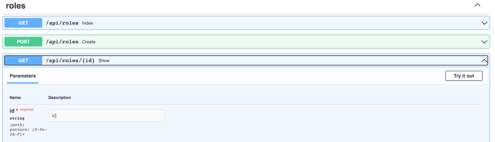
class: enlarge150
WSGI API Controllers
- Also in
lib/galaxy/webapps/galaxy/controllers/api/ - Mirroring FastAPI controllers until FastAPI required (likely 21.09)
- Exposed method take
transand request parameters and return a JSON response (possibly including Pydantic objects)
class: reduce70
WSGI API Controller Example
lib/galaxy/webapps/galaxy/controllers/api/roles.py
class RoleAPIController(BaseGalaxyAPIController):
role_manager: RoleManager = depends(RoleManager)
@web.expose_api
def index(self, trans: ProvidesUserContext, **kwd):
"""
GET /api/roles
Displays a collection (list) of roles.
"""
roles = self.role_manager.list_displayable_roles(trans)
return RoleListModel(__root__=[role_to_model(trans, r) for r in roles])
@web.expose_api
def show(self, trans: ProvidesUserContext, id: str, **kwd):
"""
GET /api/roles/{encoded_role_id}
Displays information about a role.
"""
role_id = decode_id(self.app, id)
role = self.role_manager.get(trans, role_id)
return role_to_model(trans, role)
@web.expose_api
@web.require_admin
def create(self, trans: ProvidesUserContext, payload, **kwd):
"""
POST /api/roles
Creates a new role.
"""
expand_json_keys(payload, ["user_ids", "group_ids"])
role_definition_model = RoleDefinitionModel(**payload)
role = self.role_manager.create_role(trans, role_definition_model)
return role_to_model(trans, role)
class: enlarge150
Legacy WSGI Controllers
lib/galaxy/webapps/galaxy/controllers/- Return arbitrary content - JSON, HTML, etc…
- Render HTML components using mako templates (see
templates/) - The usage of these should continue to decrease over time.
app and Dependency Injection
The architecture of connecting Galaxy components.
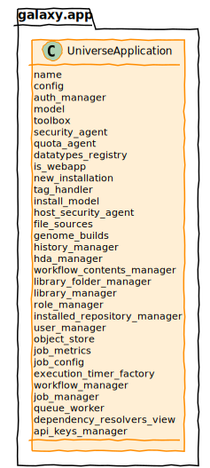
A God object
“a God object is an object that knows too much or does too much. The God object is an example of an anti-pattern and a code smell.”
https://en.wikipedia.org/wiki/God_object
Not only does app know and do too much, it is also used way too many places. Every interesting component, every controller, the web transaction, etc.. has a reference to app.
A Typical Usage
class DatasetCollectionManager:
def __init__(self, app):
self.type_registry = DATASET_COLLECTION_TYPES_REGISTRY
self.collection_type_descriptions = COLLECTION_TYPE_DESCRIPTION_FACTORY
self.model = app.model
self.security = app.security
self.hda_manager = hdas.HDAManager(app)
self.history_manager = histories.HistoryManager(app)
self.tag_handler = tags.GalaxyTagHandler(app.model.context)
self.ldda_manager = lddas.LDDAManager(app)
Problematic Dependency Graph
class DatasetCollectionManager:
def __init__(self, app: UniverseApplication):
self.type_registry = DATASET_COLLECTION_TYPES_REGISTRY
self.collection_type_descriptions = COLLECTION_TYPE_DESCRIPTION_FACTORY
self.model = app.model
self.security = app.security
self.hda_manager = hdas.HDAManager(app)
self.history_manager = histories.HistoryManager(app)
self.tag_handler = tags.GalaxyTagHandler(app.model.context)
self.ldda_manager = lddas.LDDAManager(app)
UniverseApplication creates a DatasetCollectionManager for the application and DatasetCollectionManager imports and annotates
the UniverseApplication as a requirement. This creates an unfortunate dependency loop.
Dependencies should form a DAG (directed acyclic graph).
Why an Interface?
Dependencies now closer to a DAG - DatasetCollectionManager no longer annotated with the type UniverseApplication! Imports are cleaner.
Benefits of Typing
class DatasetCollectionManager:
def __init__(self, app: StructuredApp):
self.type_registry = DATASET_COLLECTION_TYPES_REGISTRY
self.collection_type_descriptions = COLLECTION_TYPE_DESCRIPTION_FACTORY
self.model = app.model
self.security = app.security
self.hda_manager = hdas.HDAManager(app)
self.history_manager = histories.HistoryManager(app)
self.tag_handler = tags.GalaxyTagHandler(app.model.context)
self.ldda_manager = lddas.LDDAManager(app)
- mypy provides robust type checking.
- IDE can provide hints to make developing this class and usage of this class easier.
class: reduce90
Design Problems with Handling Dependencies Directly
Using app to construct a manager for dealing with dataset collections.
class DatasetCollectionManager:
def __init__(self, app: StructuredApp):
self.type_registry = DATASET_COLLECTION_TYPES_REGISTRY
self.collection_type_descriptions = COLLECTION_TYPE_DESCRIPTION_FACTORY
self.model = app.model
self.security = app.security
self.hda_manager = hdas.HDAManager(app)
self.history_manager = histories.HistoryManager(app)
self.tag_handler = tags.GalaxyTagHandler(app.model.context)
self.ldda_manager = lddas.LDDAManager(app)
- DatasetCollectionManager needs to know how to construct all the other managers it is using, not just their interface.
apphas a instance of this class andappis used to construct and instance of this class - this circular dependency chain results in brittleness and complexity in how to constructapp.appis very big and we’re depending on a lot of it but not a large percent it. This makes typing less than ideal.
class: reduce90
Testing Problems with Handling Dependencies Directly
class DatasetCollectionManager:
def __init__(self, app: StructuredApp):
self.type_registry = DATASET_COLLECTION_TYPES_REGISTRY
self.collection_type_descriptions = COLLECTION_TYPE_DESCRIPTION_FACTORY
self.model = app.model
self.security = app.security
self.hda_manager = hdas.HDAManager(app)
self.history_manager = histories.HistoryManager(app)
self.tag_handler = tags.GalaxyTagHandler(app.model.context)
self.ldda_manager = lddas.LDDAManager(app)
- Difficult to unit test properly
- What parts of app are being used?
- How do we construct a smaller app with just those pieces?
- How do we stub out classes cleanly when we’re creating the dependent objects internally.
class: reduce90
Design Benefits of Injecting Dependencies
.code[```python class DatasetCollectionManager: def init( self, model: GalaxyModelMapping, security: IdEncodingHelper, hda_manager: HDAManager, history_manager: HistoryManager, tag_handler: GalaxyTagHandler, ldda_manager: LDDAManager, ): self.type_registry = DATASET_COLLECTION_TYPES_REGISTRY self.collection_type_descriptions = COLLECTION_TYPE_DESCRIPTION_FACTORY self.model = model self.security = security
self.hda_manager = hda_manager
self.history_manager = history_manager
self.tag_handler = tag_handler
self.ldda_manager = ldda_manager ```]
- We’re no longer depending on
app. - The type signature very clearly delineates what dependencies are required.
- Unit testing can inject precise dependencies supplying only the behavior needed.
Constructing the Object Is Still Brittle
DatasetCollectionManager(
self.model,
self.security,
HDAManager(self),
HistoryManager(self),
GalaxyTagHandler(self.model.context),
LDDAManager(self)
)
- The complexity in ordering of construction of
appis still challenging. - The constructing code of this object still needs to know how to construct each dependency of the object.
- The constructing code of this object needs to explicitly import all the types.
class: enlarge150
What is Type-based Dependency Injection?
A dependency injection container keeps tracks of singletons or recipes for how to construct each type. By default when it goes to construct an object, it can just ask the container for each dependency based on the type signature of the class being constructed.
If an object declares it consumes a dependency of type X (e.g. HDAManager), just query the container
recursively for an object of type X.
What happens to object construction?
Once all the dependencies have been type annotated properly and the needed singletons have been configured.
dcm = DatasetCollectionManager(
self.model,
self.security,
HDAManager(self),
HistoryManager(self),
GalaxyTagHandler(self.model.context),
LDDAManager(self)
)
becomes
dcm = container[DatasetCollectionManager]
class: enlarge150
Picking a Library
Many of the existing DI libraries for Python predate widespread Python 3 and don’t readily infer things based on types. The benefits of typing and DI are both enhanced by the other - so it was important to pick one that could do type-based injection.
We went with Lagom, but we’ve built abstractions that would make it very easy to switch.
Lagom
https://lagom-di.readthedocs.io/en/latest/
DI and Controllers - FastAPI
FastAPI controllers allowed some basic dependency injection.
def get_tags_manager() -> TagsManager:
return TagsManager()
@cbv(router)
class FastAPITags:
manager: TagsManager = Depends(get_tags_manager)
...
Dependency injection allows for type checking but doesn’t use type inference (requires factory functions, etc..)
https://fastapi.tiangolo.com/tutorial/dependencies/
DI and Controllers - FastAPI Limitations
Also we have two different controller styles and only the new FastAPI allowed dependency injection.
def get_tags_manager() -> TagsManager:
return TagsManager()
@cbv(router)
class FastAPITags:
manager: TagsManager = Depends(get_tags_manager)
...
class TagsController(BaseAPIController):
def __init__(self, app):
super().__init__(app)
self.manager = TagsManager()
class: reduce90
DI and Controllers - Unified Approach
-def get_tags_manager() -> TagsManager:
- return TagsManager()
-
-
@cbv(router)
class FastAPITags:
- manager: TagsManager = Depends(get_tags_manager)
+ manager: TagsManager = depends(TagsManager)
@router.put(
'/api/tags',
@@ -58,11 +54,8 @@ def update(
self.manager.update(trans, payload)
-class TagsController(BaseAPIController):
-
- def __init__(self, app):
- super().__init__(app)
- self.manager = TagsManager()
+class TagsController(BaseGalaxyAPIController):
+ manager: TagsManager = depends(TagsManager)
Building dependency injection into our application and not relying on FastAPI allows for dependency injection that is less verbose, available uniformly across the application, works for the legacy controllers identically.
DI and Tasks - Framework
From lib/galaxy/celery/tasks.py
from lagom import magic_bind_to_container
...
def galaxy_task(func):
CELERY_TASKS.append(func.__name__)
app = get_galaxy_app()
if app:
return magic_bind_to_container(app)(func)
return func
magic_bind_to_container to binds function parameters to a specified Lagom DI container automatically.
DI and Tasks - Examples
From lib/galaxy/celery/tasks.py
@celery_app.task(ignore_result=True)
@galaxy_task
def purge_hda(hda_manager: HDAManager, hda_id):
hda = hda_manager.by_id(hda_id)
hda_manager._purge(hda)
@celery_app.task
@galaxy_task
def set_metadata(hda_manager: HDAManager, ldda_manager: LDDAManager, dataset_id, model_class='HistoryDatasetAssociation'):
if model_class == 'HistoryDatasetAssociation':
dataset = hda_manager.by_id(dataset_id)
elif model_class == 'LibraryDatasetDatasetAssociation':
dataset = ldda_manager.by_id(dataset_id)
dataset.datatype.set_meta(dataset)
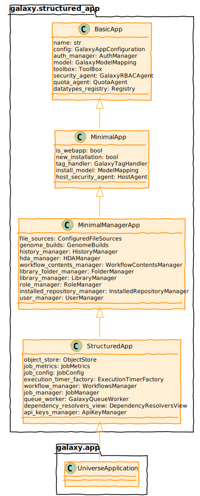
Tips for Designing New Galaxy Backend Components
- Consume only the related components you need to avoid
appwhen possible. - Annotate inputs to the component with Python types.
- Use interface types to shield consumers from implementation details.
- Rely on Galaxy’s dependency injection to construct the component and provide it to consumers.
Galaxy Tasks
The architecture surrounding Galaxy task management.
Speaker Notes
Web servers are a terrible place to do work. Traditional Python WSGI servers are meant for processing requests that take less a minute - they are meant for long running tasks.
This request/response cycle is inappropriate for deleting all the files in a history, submitted 10,000 batch jobs for a collection, building a zip file for a library folder.
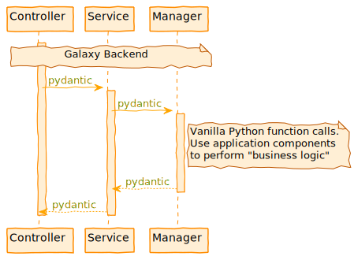
Speaker Notes
Handling a task description off to Celery allows the web server to respond right away and avoid various hacks. Celery is meant for these long running tasks and has a set of operations for handling them properly.

class: enlarge150
Downsides of Celery
Adds more complexity to deploying Galaxy. Celery needs to be available to Galaxy at runtime, production Galaxy instances need a broker and a backend.
class: reduce90
Gravity + Celery
.code[``` $ galaxy Registered galaxy config: /home/nate/work/galaxy/config/galaxy.yml Creating or updating service gunicorn Creating or updating service celery Creating or updating service celery-beat celery: added process group 2022-01-20 14:44:24,619 INFO spawned: ‘celery’ with pid 291651 celery-beat: added process group 2022-01-20 14:44:24,620 INFO spawned: ‘celery-beat’ with pid 291652 gunicorn: added process group 2022-01-20 14:44:24,622 INFO spawned: ‘gunicorn’ with pid 291653 celery STARTING celery-beat STARTING gunicorn STARTING ==> /home/nate/work/galaxy/database/gravity/log/gunicorn.log <== …log output follows…
<span>Speaker Notes</span>
Start Galaxy with Gravity starts not only the Python web server (gunicorn)
running the Galaxy application but also celery and required services.
---

---
class: enlarge150
### Declaring a Task
- Placed in `galaxy.celery.tasks`.
- We've placed a layer around Celery to mirror what we're with API endpoints.
- Typed functions with Pydantic inputs implicitly mapped.
- Implicit type based dependency injection from Galaxy's DI container (using Lagom)
- Feels a lot like writing an API endpoint.
---
class: enlarge150
### A Simple Task
.code[```
@galaxy_task(
ignore_result=True,
action="setting up export history job"
)
def export_history(
model_store_manager: ModelStoreManager,
request: SetupHistoryExportJob,
):
model_store_manager.setup_history_export_job(request)
```]
---
class: enlarge150
### The `galaxy_task` Decorator
.code[```
@galaxy_task(
ignore_result=True,
action="setting up export history job"
)
def export_history(
model_store_manager: ModelStoreManager,
request: SetupHistoryExportJob,
):
model_store_manager.setup_history_export_job(request)
```]
- `galaxy_task` is a wrapper around Celery's `task` decorator
- Wrap a simple function to turn it into a task.
- Ensure all inputs are JSON serializable or components in Galaxy's dependency injection container
---
class: enlarge150
### Celery and Pydantic
The `request` argument to `export_history` is a Pydantic model type named
`SetupHistoryExportJob`. These are mostly defined in `galaxy.schema.tasks`.
.code[```
from pydantic import BaseModel
class SetupHistoryExportJob(BaseModel):
history_id: int
job_id: int
store_directory: str
include_files: bool
include_hidden: bool
include_deleted: bool
```]
---
class: enlarge200
### Celery and Pydantic - Implementation
- Custom JSON encoding and decoding to adapt Celery to Pydantic.
- Implemented in `galaxy.celery._serialization`.
- Inject `__type__` and `__class__` attributes into JSON description.
- `@galaxy_task` decorator sets Celery `serializer` attribute.
---
class: enlarge150
### Celery and Dependency Injection
.code[```
@galaxy_task(
ignore_result=True,
action="setting up export history job"
)
def export_history(
model_store_manager: ModelStoreManager,
request: SetupHistoryExportJob,
):
model_store_manager.setup_history_export_job(request)
```]
- The type declaration on `model_store_manager` of `ModelStoreManager` causes
the Galaxy manager object of this class to be passed to the function when the
task is running.
- Client does not need to have any knowledge of this class.
---
### Executing Tasks from Galaxy
See `lib/galaxy/tools/imp_exp/__init__.py`:
.code[```
from galaxy.schema.tasks import SetupHistoryExportJob
...
request = SetupHistoryExportJob(
history_id=history.id,
job_id=self.job_id,
store_directory=store_directory,
include_files=True,
include_hidden=include_hidden,
include_deleted=include_deleted,
)
export_history.delay(request=request)
```]
The delay method is created implicitly from the `galaxy_task` decorator.
---
class: enlarge200
### Best Practices
- Place tasks in `galaxy.celery.tasks`.
- Keep the tasks as thin as possible (ideally simply delegate inputs
to a manager or another Galaxy component independent of Celery).
- Ensure required/injected Galaxy components as small and decomposed as
possible.
- Place new request definition argument types in `galaxy.schema.tasks`.
---
### Existing Tasks Success Stories
---
class: enlarge150
### PDF Export Problems
- We added PDF export of Galaxy Markdown using weasyprint
- Generation of PDF took too long, feature was quite unstable
---
class: enlarge150
### Short Term Storage (STS)
- A Galaxy component for managing user downloadable files that only
need to exist for a little time.
- Traditionally, these kind of files have required a lot of
hacking to do well in Galaxy (tracking transient request-like stuff in data model, etc..)
- Not just unoptimized by default, but unusable
- Required customizing nginx routes, special web server plugins, etc...
https://github.com/galaxyproject/galaxy/pull/13691
---
class: enlarge150
.code[```
class GeneratePdfDownload(BaseModel):
short_term_storage_request_id: str
basic_markdown: str
document_type: PdfDocumentType
```]
---
class: enlarge120
### Robust PDF Export
.code[```
from galaxy.managers.markdown_util import generate_branded_pdf
@galaxy_task(
action="preparing Galaxy Markdown PDF for download"
)
def prepare_pdf_download(
request: GeneratePdfDownload,
config: GalaxyAppConfiguration,
short_term_storage_monitor: ShortTermStorageMonitor,
):
generate_branded_pdf(
request,
config,
short_term_storage_monitor,
)
```]
---
class: enlarge120
### Exporting Histories, Invocations, Libraries
.code[```
@galaxy_task(
action="generate and stage a workflow invocation store for download"
)
def prepare_invocation_download(
model_store_manager: ModelStoreManager,
request: GenerateInvocationDownload,
):
model_store_manager.prepare_invocation_download(
request
)
```]
https://github.com/galaxyproject/galaxy/pull/12533
---
class: enlarge150
### Optimized Uploads
- Decomposed job handling, precursor to migrating more job components to Celery
- Converting uploads to tasks signficantly sped up running Galaxy tests
- API tests went from 2.5 hours to 50 minutes
- Amazing speed up for small jobs
- Exploring task composition
https://github.com/galaxyproject/galaxy/pull/13655
---
### Uploads - Task Composition
See `lib/galaxy/tools/execute.py`
.code[```
async_result = (
setup_fetch_data.s(job_id, raw_tool_source=raw_tool_source)
| fetch_data.s(job_id=job_id).set(queue="galaxy.external")
| set_job_metadata.s(
extended_metadata_collection="extended" in tool.app.config.metadata_strategy,
job_id=job_id,
).set(
queue="galaxy.external",
link_error=finish_job.si(job_id=job_id, raw_tool_source=raw_tool_source)
)
| finish_job.si(job_id=job_id, raw_tool_source=raw_tool_source)
)()
```]
---
class: enlarge200
### Batch Operations
Task-based operations enable the most expensive of the new history's batch operations.
- Changing datatypes
- Purging datasets
https://github.com/galaxyproject/galaxy/pull/14042
---
class: enlarge200
### Future Work
- *Migrating tool submission to tasks*
- Workflow scheduling
- Importing shared histories
https://github.com/galaxyproject/galaxy/issues/11721
---
## Application Components - Models, Managers, and Services
*The architecture surrounding Galaxy components.*
---

---
There are many ways to describe and visualize the Galaxy server architecture,
one is to imagine the Galaxy database as the ultimate source for Galaxy "stuff"
and the API controllers as the ultimate sink.
In this architecture imagining of Galaxy, managers are the layer meant to
mediate all controller interactions (and isolate the backend from the web
framework) while the model layer is meant to mediate all database interactions
(and isolate the backend from database internals).
---

---
class: enlarge150
### Services
Handle API and web processing details of requests and responses at a high-level.
Thin layer below the controllers to shield applciation logic from FastAPI internals.
In practice, it is totally fine to skip this layer and have FastAPI controllers talk directly
to managers.
---
class: enlarge150
### Managers
High-level business logic that ties all of these components together.
Controllers should ideally be thin wrappers around actions defined in managers.
Whenever a model requires more than just the database, the operation should be defined
in a manager instead of in the model.
---
### Managers - Some Key Files

---
### Managers - Some Helpers

---
### Galaxy Models
- Database interactions powered by SQLAlchemy - https://www.sqlalchemy.org/.
- Galaxy doesn't think in terms of "rows" but "objects".
- Classes for Galaxy model objects defined in `lib/galaxy/model/__init__.py`.
- Classes mapped to database objects in same module via "declarative mapping".
- Classes/attributes mapped to tables/columns
- Associations between classes mapped to relationships between tables
---

---
### Galaxy Database Schema Migrations
- Automated execution of incremental, reversible changes to the database schema.
- Performed to update or revert the database schema to a newer or older version.
- Powered by Alembic - https://alembic.sqlalchemy.org/.
- (as of 22.05; prior to that by SQLAlchemy Migrate)
- Each file in `lib/galaxy/model/migrations/alembic/versions_gxy` represents a migration description
- `e7b6dcb09efd_create_gxy_branch.py`
- `6a67bf27e6a6_deferred_data_tables.py`
- `b182f655505f_add_workflow_source_metadata_column.py`
---
### More on Schema Migrations
- Great documentation in code README - `lib/galaxy/model/migrations/README.md`
- Admin perspective on how to migrate databases forward and revert on problems.
- Developer persepctive on how to add new revisions.
- Galaxy's data model is split into the galaxy model and the legacy install model:
- Persisted in one combined database or two separate databases
- Represented by 2 migration branches: "gxy" and "tsi"
- Schema changes defined in revision modules:
- `lib/galaxy/model/migrations/alembic/versions_gxy` (gxy branch: galaxy model)
- `lib/galaxy/model/migrations/alembic/versions_tsi` (tsi branch: legacy install model)
---

### Database Diagram
https://galaxyproject.org/admin/internals/data-model/
---

---

---
### Dataset Metadata
- Typed key-value pairs attached to HDA.
- Keys and types defined at the datatype level.
- Can be used by tools to dynamically control the tool form.
<span>Speaker Notes</span>
---

---

---

---

---

---
## Application Components - Plugins
*The architecture of pluggable Galaxy components.*
---

---
### Plugins All the Way Down

---
#### Datatypes

Developer docs on adding new datatypes can be found at https://docs.galaxyproject.org/en/latest/dev/data_types.html.
---
#### Tools

Three major classes can be summarized as - the `ToolBox` contains `Tool` objects
that execute a `ToolAction`.
---
#### Subclasses of Tool

---

---
### A Little About Jobs
- Job is placed into the database and picked up by the job handler.
- Job handler (`JobHandler`) watches the job and transitions job's state - common startup and finishing.
- Job mapper (`JobRunnerMapper`) decides the "destination" for a job.
- Job runner (e.g. `DrammaJobRunner`) actual runs the job and provides an interface for checking status.
---
### Job Runners

---

---

---
### Visualization Plugins
Adding new visualizations to a Galaxy instance
- Configuration file (XML)
- Base template (Mako or JavaScript)
- Additional static data if needed (CSS, JS, …)
.footnote[[Learn more about it with our visualization tutorial.](/training-material/topics/dev/tutorials/visualization-generic/slides.html)]
---
class: reduce70
```xml
<?xml version="1.0" encoding="UTF-8"?>
<!DOCTYPE visualization SYSTEM "../../visualization.dtd">
<visualization name="ChiRAViz">
<description>ChiRAViz</description>
<data_sources>
<data_source>
<model_class>HistoryDatasetAssociation</model_class>
<test type="isinstance" test_attr="datatype" result_type="datatype">binary.ChiraSQLite</test>
<to_param param_attr="id">dataset_id</to_param>
</data_source>
</data_sources>
<params>
<param type="dataset" var_name_in_template="hda" required="true">dataset_id</param>
</params>
<template>chiraviz.mako</template>
</visualization>
template: left-aligned
Visualization Examples
All in config/plugins/visualizations:
chiraviz- Latest addition mid-2020, demonstrates current state of the art building and packing. #9562csg- Chemical structure viewergraphviz- Visualize graph data using cytoscape.jscharts- Classic charts as well as some integrated BioJS visualizationstrackster- Genome browser, deeply tied to Galaxy internals.
Data Providers
Provide efficient access to data for viz & API
Framework provides direct link to read the raw dataset or use data providers to adapt it
In config, assert that visualization requires a given type of data providers
Data providers process data before sending to browser - slice, filter, reformat, …
Object Store
.strike[```python
fh = open(dataset.file_path, ‘w’) fh.write(‘foo’) fh.close() fh = open(dataset.file_path, ‘r’) fh.read() ```]
>>> app.objectstore.update_from_file(dataset, file_name=‘foo.txt’)
>>> app.objectstore.get_data(dataset)
>>> app.objectstore.get_data(dataset, start=42, count=4096)
These implementation are found below lib/galaxy/objectstore/.
FileSources vs ObjectStores
ObjectStores provide datasets not files, the files are organized logically in a very flat way around a dataset.
FilesSources instead provide files and directories, not datasets. A FilesSource is meant to be browsed in hierarchical fashion - and also has no concept of extra files, etc.. The former is assumed to be persistent, the latter makes no such assumption.
More information about File source plugins can be found at http://bit.ly/gcc21files
Workflow Modules
All these modules are found in lib/galaxy/workflow/modules.py.
lib/galaxy/util/plugin_config.py
Standardized way to load both a set of possible plugin class implementations from a directory of Python files and to parse either an XML or YAML/JSON description of configured plugins.
lib/galaxy/util/plugin_config.py Example Files
lib/galaxy/util/plugin_config.py Plugin Implementations
def plugins_dict(module, plugin_type_identifier):
plugin_dict = {}
for plugin_module in import_submodules(module, ordered=True):
for clazz in __plugin_classes_in_module(plugin_module):
plugin_type = getattr(clazz, plugin_type_identifier, None)
if plugin_type:
plugin_dict[plugin_type] = clazz
return plugin_dict
Pieces of lib/galaxy/tool_util/deps/containers.py
class ContainerRegistry(object):
def __init__(self, app_info, mulled_resolution_cache=None):
self.resolver_classes = self.__resolvers_dict()
self.app_info = app_info
self.container_resolvers = self.__build_container_resolvers(app_info)
# ... other stuff here
def __build_container_resolvers(self, app_info):
conf_file = getattr(app_info, 'containers_resolvers_config_file', None)
plugin_source = plugin_config.plugin_source_from_path(conf_file)
return self._parse_resolver_conf(plugin_source)
def _parse_resolver_conf(self, plugin_source):
extra_kwds = {
'app_info': self.app_info
}
return plugin_config.load_plugins(
self.resolver_classes, plugin_source, extra_kwds
)
def __resolvers_dict(self):
import galaxy.tool_util.deps.container_resolvers
return plugin_config.plugins_dict(
galaxy.tool_util.deps.container_resolvers,
'resolver_type'
)
Pieces of lib/galaxy/tool_util/deps/container_resolvers/mulled.py
class CachedMulledDockerContainerResolver(ContainerResolver):
resolver_type = "cached_mulled"
def __init__(self, app_info=None, namespace="biocontainers", hash_func="v2", **kwds):
super(CachedMulledDockerContainerResolver, self).__init__(app_info)
self.namespace = namespace
self.hash_func = hash_func
def resolve(self, enabled_container_types, tool_info, **kwds):
# ... do the magic with configured plugin
container_resolvers_conf.xml
<container_resolvers>
<cached_mulled />
<cached_mulled namespace="mycustom" />
</container_resolvers>
container_resolvers_conf.yml
- resolver_type: cached_mulled
- resolver_type: cached_mulled
namespace: mycustom
Client Architecture
The architecture of Galaxy’s web user interface.
template: left-aligned
Client Directories
- Source JavaScript for the client is in
client/src. - Source stylesheets are in
client/src/style. - “Packed” bundles served by Galaxy stored in
static/distrun.shusesgit diffto try to determine if client needs to be built before starting Galaxy- webpack builds these “compiled” artifacts
Upshot - to develop against the client, modify files in client/ and rebuild with make client before
deployment.
class: normal
Building the Client - Makefile Targets
client: node-deps ## Rebuild all client-side artifacts (for local dev)
cd client && yarn run build
client-production-maps: node-deps ## Build optimized artifacts with sourcemaps.
cd client && yarn run build-production-maps
client-watch: node-deps ## Rebuild client on each change.
cd client && yarn run watch
client-format: node-deps ## Reformat client code
cd client && yarn run prettier
client-lint: client-eslint client-format-check ## ES lint and check format of client
client-test: node-deps ## Run JS unit tests
cd client && yarn run test
client-test-watch: client ## Watch and run all client unit tests on changes
cd client && yarn run jest-watch
node-deps: ## Install NodeJS and dependencies.
Automatically Reloading During Development
The following command rebuilds the application on each change.
make client-watch
This is still a relatively slow process, an extra client development server can be started that proxies non-client requests to your Galaxy server and selectively reloads only what is needed during active development (hot module replacement or HMR).
make client-dev-server
Make sure to open Galaxy at http://localhost:8081 instead to point at the client proxy.
class: white
class: enlarge150
webpack in Galaxy
Packs and “transpiles” Galaxy ES6 code (.js), Galaxy Vue modules (.vue), libraries from npm, scss stylesheets (.scss) into browser native bundles.
Hundreds of high-level well organized files into optimized single files that can be quickly downloaded.
Lots of active development and complexity around Viz plugins and dependencies for instance, but the webpack configuration file in config/webpack.config.js is fairly straightforward.
class: white
Stylesheets
- Galaxy shared stylesheets are generally defined using the SCSS syntax
- SCSS is a high-level superset of CSS - https://sass-lang.com/documentation/syntax
sassis leveraged by webpack to convert these styles to native CSS at client build time- Rebuild style with
make style - Galaxy’s SCSS files can be found in
client/src/style/scss/
Package and Build Files
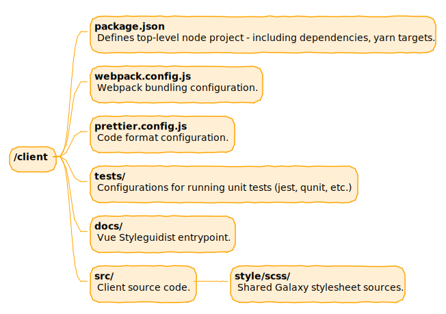
Source Files
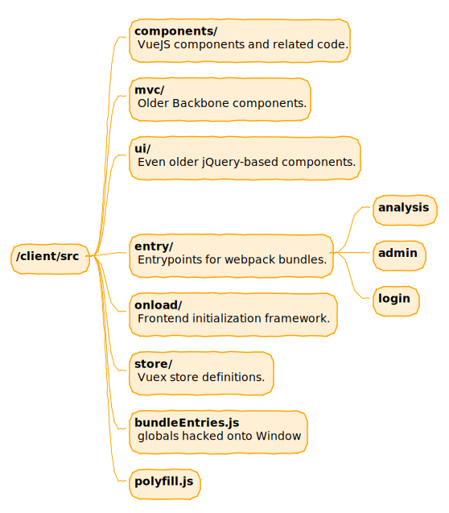
ES6
The client is built from JavaScript source files. We use ES6 JavaScript.
A tutorial to help learn JavaScript generally might be https://www.w3schools.com/js/.
For someone familiar with JavaScript but that wants a primer on the new language features in ES6, https://www.w3schools.com/js/js_es6.asp may be more appropriate.
Vue
Vue.js is a reactive framework for building web client applications.
We chose Vue.js over React initially because of its focus on allowing developers to incrementally or progressively replace pieces of complex existing applications.
The idea behind Vue.js is fairly simple to pick up and there is a lot of great tutorials and videos available. https://vuejs.org/v2/guide/ is a really good jumping off point.
Vuex
Vuex is a state management pattern + library for Vue.js applications. It serves as a centralized store for all the components in an application, with rules ensuring that the state can only be mutated in a predictable fashion.
https://vuex.vuejs.org/
Client Unit Tests
https://jestjs.io/
Configured in client/src/jest/jest.config.js.
Vue tests are placed beside components in client/src, more tests in client/test/qunit/tests and client/test/jest/standalone/.
Vue Test Utils
Vue Test Utils is the official unit testing utility library for Vue.js.
https://vue-test-utils.vuejs.org/
Really nice reference library documentation. A lot of helpers and concepts to unit test Vue components.
Client Unit Test Design Tips
https://github.com/galaxyproject/galaxy/tree/dev/client/docs/src/component-design/unit-testing
- Clearly document the intent of your test
- Implement logic in pure functions when possible
- Wrap native browser resources in a function so they can be easily mocked
Webhooks in Galaxy
Webhooks is a system in Galaxy which can be used to write small JS and/or Python functions to change predefined locations in the Galaxy client.
In short: A plugin infrastructure for the Galaxy UI
.footnote[You can learn more about webhooks using our webhook training.]
Webhook masthead example

At the header menu: Enabling the overlay search, link to communities …
.footnote[You can learn more about webhooks using our webhook training.]
Webhook tool/workflow example

Shown after tool or workflow execution. Comics, citations, support …
.footnote[You can learn more about webhooks using our webhook training.]
Webhook history-menu example

Adds an entry to the history menu - no functionality as of now
.footnote[You can learn more about webhooks using our webhook training.]
Dependencies
template: left-aligned
Dependencies - Python
script/common_startup.sh sets up a virtualenv with required dependencies in $GALAXY_ROOT/.venv (or $GALAXY_VIRTUAL_ENV if set).
- Check for existing virtual environment, if it doesn’t exist check for
virtualenv. - If
virtualenvexists, use it. Otherwise download it as a script and setup a virtual environment using it. . "$GALAXY_VIRTUAL_ENV/bin/activate"- Upgrade to latest
pipto allow use of binary wheels. pip install -r requirements.txt --index-url https://wheels.galaxyproject.org/simple- Install dozens of dependencies.
template: left-aligned
Dependencies - JavaScript
- Dependencies are defined in
client/package.json. - These are fetched from npm and compiled into bundles as part of
make clientand relatedMakefiletargets.
Galaxy Startup Process
Cloning Galaxy
$ git clone https://github.com/galaxyproject/galaxy.git galaxy
Cloning into 'galaxy'...
remote: Counting objects: 173809, done.
remote: Total 173809 (delta 0), reused 0 (delta 0), pack-reused 173809
Receiving objects: 100% (173809/173809), 55.18 MiB | 11.08 MiB/s, done.
Resolving deltas: 100% (137885/137885), done.
Checking connectivity... done.
$ cd galaxy
$ git checkout -b master origin/master
Branch master set up to track remote branch master from origin.
Switched to a new branch 'master'
$ sh run.sh
class: reduce90
Copying Configs
$ sh run.sh
Initializing config/migrated_tools_conf.xml from migrated_tools_conf.xml.sample
Initializing config/shed_tool_conf.xml from shed_tool_conf.xml.sample
Initializing config/shed_tool_data_table_conf.xml from shed_tool_data_table_conf.xml.sample
Initializing config/shed_data_manager_conf.xml from shed_data_manager_conf.xml.sample
Initializing tool-data/shared/ucsc/builds.txt from builds.txt.sample
Initializing tool-data/shared/ucsc/manual_builds.txt from manual_builds.txt.sample
Initializing tool-data/shared/ucsc/ucsc_build_sites.txt from ucsc_build_sites.txt.sample
Initializing tool-data/shared/igv/igv_build_sites.txt from igv_build_sites.txt.sample
Initializing tool-data/shared/rviewer/rviewer_build_sites.txt from rviewer_build_sites.txt.sample
Initializing static/welcome.html from welcome.html.sample
Setting up .venv and pip
Using real prefix '/usr'
New python executable in .venv/bin/python
Installing setuptools, pip, wheel...done.
Activating virtualenv at .venv
Collecting pip>=8.1
Using cached pip-8.1.2-py2.py3-none-any.whl
Installing collected packages: pip
Found existing installation: pip 7.1.2
Uninstalling pip-7.1.2:
Successfully uninstalled pip-7.1.2
Successfully installed pip-8.1.2
class: reduce70
Installing Dependencies
.code[``` Collecting bx-python==0.7.3 (from -r requirements.txt (line 2)) Downloading https://wheels.galaxyproject.org/packages/bx_python-0.7.3-cp27-cp27mu-manylinux1_x86_64.whl (2.1MB) Collecting MarkupSafe==0.23 (from -r requirements.txt (line 3)) Downloading https://wheels.galaxyproject.org/packages/MarkupSafe-0.23-cp27-cp27mu-manylinux1_x86_64.whl Collecting PyYAML==3.11 (from -r requirements.txt (line 4)) Downloading https://wheels.galaxyproject.org/packages/PyYAML-3.11-cp27-cp27mu-manylinux1_x86_64.whl (367kB) Collecting SQLAlchemy==1.0.8 (from -r requirements.txt (line 5)) Downloading https://wheels.galaxyproject.org/packages/SQLAlchemy-1.0.8-cp27-cp27mu-manylinux1_x86_64.whl (1.0MB) Collecting mercurial==3.7.3 (from -r requirements.txt (line 6)) Downloading https://wheels.galaxyproject.org/packages/mercurial-3.7.3-cp27-cp27mu-manylinux1_x86_64.whl (1.5MB) … … Building wheels for collected packages: repoze.lru Running setup.py bdist_wheel for repoze.lru: started Running setup.py bdist_wheel for repoze.lru: finished with status ‘done’ Stored in directory: /home/john/.cache/pip/wheels/b2/cd/b3/7e24400bff83325a01d492940eff6e9579f553f33348323d79 Successfully built repoze.lru Installing collected packages: bx-python, MarkupSafe, PyYAML, SQLAlchemy, mercurial, numpy, pycrypto, six, Paste, PasteDeploy, docutils, wchartype, repoze.lru, Routes, WebOb, WebHelpers, Mako, pytz, Babel, Beaker, dictobj, nose, Parsley, Whoosh, Markdown, Cheetah, requests, boto, requests-toolbelt, bioblend, anyjson, amqp, kombu, psutil, PasteScript, pulsar-galaxy-lib, sqlparse, pbr, decorator, Tempita, sqlalchemy-migrate, pyparsing, svgwrite, ecdsa, paramiko, Fabric, pysam Successfully installed Babel-2.0 Beaker-1.7.0 Cheetah-2.4.4 Fabric-1.10.2 Mako-1.0.2 Markdown-2.6.3 MarkupSafe-0.23 Parsley-1.3 Paste-2.0.2 PasteDeploy-1.5.2 PasteScript-2.0.2 PyYAML-3.11 Routes-2.2 SQLAlchemy-1.0.8 Tempita-0.5.3.dev0 WebHelpers-1.3 WebOb-1.4.1 Whoosh-2.7.4 amqp-1.4.8 anyjson-0.3.3 bioblend-0.7.0 boto-2.38.0 bx-python-0.7.3 decorator-4.0.2 dictobj-0.3.1 docutils-0.12 ecdsa-0.13 kombu-3.0.30 mercurial-3.7.3 nose-1.3.7 numpy-1.9.2 paramiko-1.15.2 pbr-1.8.0 psutil-4.1.0 pulsar-galaxy-lib-0.7.0.dev4 pycrypto-2.6.1 pyparsing-2.1.1 pysam-0.8.4+gx1 pytz-2015.4 repoze.lru-0.6 requests-2.8.1 requests-toolbelt-0.4.0 six-1.9.0 sqlalchemy-migrate-0.10.0 sqlparse-0.1.16 svgwrite-1.1.6 wchartype-0.1
---
class: reduce70
### Initial Debugging as App Starts
.code[```
Activating virtualenv at .venv
DEBUG:galaxy.app:python path is: /home/john/workspace/galaxy-clean/scripts,
/home/john/workspace/galaxy-clean/lib, /home/john/workspace/galaxy-clean/.venv/lib/python2.7,/home/john/workspace/galaxy-clean/.venv/lib/python2.7/plat-x86_64-linux-gnu,
/home/john/workspace/galaxy-clean/.venv/lib/python2.7/lib-tk, /home/john/workspace/galaxy-clean/.venv/lib/python2.7/lib-old, /home/john/workspace/galaxy-clean/.venv/lib/python2.7/lib-dynload,
/usr/lib/python2.7, /usr/lib/python2.7/plat-x86_64-linux-gnu, /usr/lib/python2.7/lib-tk, /home/john/workspace/galaxy-clean/.venv/local/lib/python2.7/site-packages
INFO:galaxy.config:Logging at '10' level to 'stdout'
galaxy.queue_worker INFO 2016-06-23 19:11:51,925 Initializing main Galaxy Queue Worker on sqlalchemy+sqlite:///./database/control.sqlite?isolation_level=IMMEDIATE
tool_shed.tool_shed_registry DEBUG 2016-06-23 19:11:51,951 Loading references to tool sheds from ./config/tool_sheds_conf.xml.sample
tool_shed.tool_shed_registry DEBUG 2016-06-23 19:11:51,951 Loaded reference to tool shed: Galaxy Main Tool Shed
galaxy.app DEBUG 2016-06-23 19:11:51,956 Using "galaxy.yml" config file:
/home/john/workspace/galaxy-clean/config/galaxy.yml.sample
```]
---
class: reduce70
### Database Migrations
.code[```
migrate.versioning.repository DEBUG 2016-06-23 19:11:51,993 Loading repository lib/galaxy/model/migrate...
migrate.versioning.script.base DEBUG 2016-06-23 19:11:51,994 Loading script lib/galaxy/model/migrate/versions/0001_initial_tables.py...
migrate.versioning.script.base DEBUG 2016-06-23 19:11:51,994 Script lib/galaxy/model/migrate/versions/0001_initial_tables.py loaded successfully
migrate.versioning.script.base DEBUG 2016-06-23 19:11:51,994 Loading script lib/galaxy/model/migrate/versions/0002_metadata_file_table.py...
migrate.versioning.script.base DEBUG 2016-06-23 19:11:52,009 Loading script lib/galaxy/model/migrate/versions/0131_subworkflow_and_input_parameter_modules.py...
...
galaxy.model.migrate.check INFO 2016-06-23 19:13:32,812 Migrating 128 -> 129...
galaxy.model.migrate.check INFO 2016-06-23 19:13:33,436
galaxy.model.migrate.check INFO 2016-06-23 19:13:33,437 Migration script to allow invalidation of job external output metadata temp files
galaxy.model.migrate.check INFO 2016-06-23 19:13:33,437
galaxy.model.migrate.check INFO 2016-06-23 19:13:33,437
galaxy.model.migrate.check INFO 2016-06-23 19:13:33,437 Migrating 129 -> 130...
galaxy.model.migrate.check INFO 2016-06-23 19:13:34,325
galaxy.model.migrate.check INFO 2016-06-23 19:13:34,325 Migration script to change the value column of user_preference from varchar to text.
galaxy.model.migrate.check INFO 2016-06-23 19:13:34,325
galaxy.model.migrate.check INFO 2016-06-23 19:13:34,325
galaxy.model.migrate.check INFO 2016-06-23 19:13:34,326 Migrating 130 -> 131...
galaxy.model.migrate.check INFO 2016-06-23 19:13:35,633
galaxy.model.migrate.check INFO 2016-06-23 19:13:35,633 Migration script to support subworkflows and workflow request input parameters
galaxy.model.migrate.check INFO 2016-06-23 19:13:35,633
galaxy.model.migrate.check INFO 2016-06-23 19:13:35,633
```]
---
Everything after here happens every time
---
class: reduce70
.code[```
migrate.versioning.repository DEBUG 2016-06-23 19:13:35,635 Loading repository lib/tool_shed/galaxy_install/migrate...
migrate.versioning.script.base DEBUG 2016-06-23 19:13:35,635 Loading script lib/tool_shed/galaxy_install/migrate/versions/0001_tools.py...
migrate.versioning.script.base DEBUG 2016-06-23 19:13:35,636 Script lib/tool_shed/galaxy_install/migrate/versions/0001_tools.py loaded successfully
migrate.versioning.script.base DEBUG 2016-06-23 19:13:35,636 Loading script lib/tool_shed/galaxy_install/migrate/versions/0002_tools.py...
migrate.versioning.script.base DEBUG 2016-06-23 19:13:35,636 Script lib/tool_shed/galaxy_install/migrate/versions/0002_tools.py loaded successfully
migrate.versioning.script.base DEBUG 2016-06-23 19:13:35,636 Loading script lib/tool_shed/galaxy_install/migrate/versions/0003_tools.py...
migrate.versioning.script.base DEBUG 2016-06-23 19:13:35,636 Script lib/tool_shed/galaxy_install/migrate/versions/0003_tools.py loaded successfully
migrate.versioning.script.base DEBUG 2016-06-23 19:13:35,636 Loading script lib/tool_shed/galaxy_install/migrate/versions/0004_tools.py...
migrate.versioning.script.base DEBUG 2016-06-23 19:13:35,636 Script lib/tool_shed/galaxy_install/migrate/versions/0004_tools.py loaded successfully
migrate.versioning.script.base DEBUG 2016-06-23 19:13:35,636 Loading script lib/tool_shed/galaxy_install/migrate/versions/0005_tools.py...
migrate.versioning.script.base DEBUG 2016-06-23 19:13:35,636 Script lib/tool_shed/galaxy_install/migrate/versions/0005_tools.py loaded successfully
...
migrate.versioning.script.base DEBUG 2016-06-23 19:13:35,637 Script lib/tool_shed/galaxy_install/migrate/versions/0012_tools.py loaded successfully
migrate.versioning.repository DEBUG 2016-06-23 19:13:35,637 Repository lib/tool_shed/galaxy_install/migrate loaded successfully
tool_shed.galaxy_install.migrate.check DEBUG 2016-06-23 19:13:35,660 The main Galaxy tool shed is not currently available, so skipped tool migration 1 until next server startup
galaxy.config INFO 2016-06-23 19:13:35,679 Install database targetting Galaxy's database configuration.
```]
---
class: reduce70
.code[```
galaxy.datatypes.registry DEBUG 2016-06-23 19:13:35,748 Loading datatypes from ./config/datatypes_conf.xml.sample
galaxy.datatypes.registry DEBUG 2016-06-23 19:13:35,749 Retrieved datatype module galaxy.datatypes.binary:Ab1 from the datatype registry.
galaxy.datatypes.registry DEBUG 2016-06-23 19:13:35,750 Retrieved datatype module galaxy.datatypes.assembly:Amos from the datatype registry.
galaxy.datatypes.registry DEBUG 2016-06-23 19:13:35,751 Retrieved datatype module galaxy.datatypes.text:Arff from the datatype registry.
galaxy.datatypes.registry DEBUG 2016-06-23 19:13:35,751 Retrieved datatype module galaxy.datatypes.data:GenericAsn1 from the datatype registry.
...
galaxy.datatypes.registry DEBUG 2016-06-23 19:13:35,822 Retrieved datatype module galaxy.datatypes.mothur:SquareDistanceMatrix from the datatype registry.
galaxy.datatypes.registry DEBUG 2016-06-23 19:13:35,822 Retrieved datatype module galaxy.datatypes.mothur:LowerTriangleDistanceMatrix from the datatype registry.
galaxy.datatypes.registry DEBUG 2016-06-23 19:13:35,822 Retrieved datatype module galaxy.datatypes.mothur:RefTaxonomy from the datatype registry.
galaxy.datatypes.registry DEBUG 2016-06-23 19:13:35,822 Retrieved datatype module galaxy.datatypes.mothur:RefTaxonomy from the datatype registry.
galaxy.datatypes.registry DEBUG 2016-06-23 19:13:35,823 Retrieved datatype module galaxy.datatypes.mothur:RefTaxonomy from the datatype registry.
galaxy.datatypes.registry DEBUG 2016-06-23 19:13:35,823 Retrieved datatype module galaxy.datatypes.mothur:ConsensusTaxonomy from the datatype registry.
galaxy.datatypes.registry DEBUG 2016-06-23 19:13:35,823 Retrieved datatype module galaxy.datatypes.mothur:TaxonomySummary from the datatype registry.
galaxy.datatypes.registry DEBUG 2016-06-23 19:13:35,823 Retrieved datatype module galaxy.datatypes.mothur:Frequency from the datatype registry.
galaxy.datatypes.registry DEBUG 2016-06-23 19:13:35,823 Retrieved datatype module galaxy.datatypes.mothur:Quantile from the datatype registry.
galaxy.datatypes.registry DEBUG 2016-06-23 19:13:35,823 Retrieved datatype module galaxy.datatypes.mothur:Quantile from the datatype registry.
galaxy.datatypes.registry DEBUG 2016-06-23 19:13:35,823 Retrieved datatype module galaxy.datatypes.mothur:Quantile from the datatype registry.
galaxy.datatypes.registry DEBUG 2016-06-23 19:13:35,823 Retrieved datatype module galaxy.datatypes.mothur:Quantile from the datatype registry.
galaxy.datatypes.registry DEBUG 2016-06-23 19:13:35,824 Retrieved datatype module galaxy.datatypes.mothur:Axes from the datatype registry.
galaxy.datatypes.registry DEBUG 2016-06-23 19:13:35,824 Retrieved datatype module galaxy.datatypes.mothur:SffFlow from the datatype registry.
galaxy.datatypes.registry DEBUG 2016-06-23 19:13:35,824 Retrieved datatype module galaxy.datatypes.mothur:CountTable from the datatype registry.
```]
---
class: reduce70
.code[```
galaxy.datatypes.registry DEBUG 2016-06-23 19:13:35,824 Loaded sniffer for datatype 'galaxy.datatypes.mothur:Sabund'
galaxy.datatypes.registry DEBUG 2016-06-23 19:13:35,824 Loaded sniffer for datatype 'galaxy.datatypes.mothur:Otu'
galaxy.datatypes.registry DEBUG 2016-06-23 19:13:35,824 Loaded sniffer for datatype 'galaxy.datatypes.mothur:GroupAbund'
galaxy.datatypes.registry DEBUG 2016-06-23 19:13:35,824 Loaded sniffer for datatype 'galaxy.datatypes.mothur:SecondaryStructureMap'
galaxy.datatypes.registry DEBUG 2016-06-23 19:13:35,824 Loaded sniffer for datatype 'galaxy.datatypes.mothur:LowerTriangleDistanceMatrix'
galaxy.datatypes.registry DEBUG 2016-06-23 19:13:35,824 Loaded sniffer for datatype 'galaxy.datatypes.mothur:SquareDistanceMatrix'
galaxy.datatypes.registry DEBUG 2016-06-23 19:13:35,825 Loaded sniffer for datatype 'galaxy.datatypes.mothur:PairwiseDistanceMatrix'
galaxy.datatypes.registry DEBUG 2016-06-23 19:13:35,825 Loaded sniffer for datatype 'galaxy.datatypes.mothur:Oligos'
galaxy.datatypes.registry DEBUG 2016-06-23 19:13:35,825 Loaded sniffer for datatype 'galaxy.datatypes.mothur:Quantile'
galaxy.datatypes.registry DEBUG 2016-06-23 19:13:35,825 Loaded sniffer for datatype 'galaxy.datatypes.mothur:Frequency'
galaxy.datatypes.registry DEBUG 2016-06-23 19:13:35,825 Loaded sniffer for datatype 'galaxy.datatypes.mothur:LaneMask'
galaxy.datatypes.registry DEBUG 2016-06-23 19:13:35,825 Loaded sniffer for datatype 'galaxy.datatypes.mothur:RefTaxonomy'
galaxy.datatypes.registry DEBUG 2016-06-23 19:13:35,825 Loaded sniffer for datatype 'galaxy.datatypes.mothur:Axes'
galaxy.datatypes.registry DEBUG 2016-06-23 19:13:35,825 Loaded sniffer for datatype 'galaxy.datatypes.constructive_solid_geometry:PlyAscii'
galaxy.datatypes.registry DEBUG 2016-06-23 19:13:35,825 Loaded sniffer for datatype 'galaxy.datatypes.constructive_solid_geometry:PlyBinary'
galaxy.datatypes.registry DEBUG 2016-06-23 19:13:35,825 Loaded sniffer for datatype 'galaxy.datatypes.constructive_solid_geometry:VtkAscii'
galaxy.datatypes.registry DEBUG 2016-06-23 19:13:35,825 Loaded sniffer for datatype 'galaxy.datatypes.constructive_solid_geometry:VtkBinary'
galaxy.datatypes.registry DEBUG 2016-06-23 19:13:35,825 Loaded sniffer for datatype 'galaxy.datatypes.interval:ScIdx'
galaxy.datatypes.registry DEBUG 2016-06-23 19:13:35,825 Loaded sniffer for datatype 'galaxy.datatypes.tabular:Vcf'
galaxy.datatypes.registry DEBUG 2016-06-23 19:13:35,826 Loaded sniffer for datatype 'galaxy.datatypes.binary:TwoBit'
galaxy.datatypes.registry DEBUG 2016-06-23 19:13:35,826 Loaded sniffer for datatype 'galaxy.datatypes.binary:GeminiSQLite'
galaxy.datatypes.registry DEBUG 2016-06-23 19:13:35,826 Loaded sniffer for datatype 'galaxy.datatypes.binary:MzSQlite'
...
galaxy.datatypes.registry DEBUG 2016-06-23 19:13:35,832 Loaded sniffer for datatype 'galaxy.datatypes.images:Psd'
galaxy.datatypes.registry DEBUG 2016-06-23 19:13:35,832 Loaded sniffer for datatype 'galaxy.datatypes.images:Xbm'
galaxy.datatypes.registry DEBUG 2016-06-23 19:13:35,832 Loaded sniffer for datatype 'galaxy.datatypes.images:Rgb'
galaxy.datatypes.registry DEBUG 2016-06-23 19:13:35,832 Loaded sniffer for datatype 'galaxy.datatypes.images:Pbm'
galaxy.datatypes.registry DEBUG 2016-06-23 19:13:35,832 Loaded sniffer for datatype 'galaxy.datatypes.images:Pgm'
galaxy.datatypes.registry DEBUG 2016-06-23 19:13:35,832 Loaded sniffer for datatype 'galaxy.datatypes.images:Xpm'
galaxy.datatypes.registry DEBUG 2016-06-23 19:13:35,833 Loaded sniffer for datatype 'galaxy.datatypes.images:Eps'
galaxy.datatypes.registry DEBUG 2016-06-23 19:13:35,833 Loaded sniffer for datatype 'galaxy.datatypes.images:Rast'
galaxy.datatypes.registry DEBUG 2016-06-23 19:13:35,833 Loaded sniffer for datatype 'galaxy.datatypes.binary:OxliCountGraph'
galaxy.datatypes.registry DEBUG 2016-06-23 19:13:35,833 Loaded sniffer for datatype 'galaxy.datatypes.binary:OxliNodeGraph'
galaxy.datatypes.registry DEBUG 2016-06-23 19:13:35,833 Loaded sniffer for datatype 'galaxy.datatypes.binary:OxliTagSet'
galaxy.datatypes.registry DEBUG 2016-06-23 19:13:35,833 Loaded sniffer for datatype 'galaxy.datatypes.binary:OxliStopTags'
galaxy.datatypes.registry DEBUG 2016-06-23 19:13:35,833 Loaded sniffer for datatype 'galaxy.datatypes.binary:OxliSubset'
galaxy.datatypes.registry DEBUG 2016-06-23 19:13:35,833 Loaded sniffer for datatype 'galaxy.datatypes.binary:OxliGraphLabels'
]
class: reduce70
.code[
galaxy.datatypes.registry DEBUG 2016-06-23 19:13:35,833 Loaded build site 'ucsc': tool-data/shared/ucsc/ucsc_build_sites.txt with display sites: main,test,archaea,ucla
galaxy.datatypes.registry DEBUG 2016-06-23 19:13:35,834 Loaded build site 'gbrowse': tool-data/shared/gbrowse/gbrowse_build_sites.txt with display sites: modencode,sgd_yeast,tair,wormbase,wormbase_ws120,wormbase_ws140,wormbase_ws170,wormbase_ws180,wormbase_ws190,wormbase_ws200,wormbase_ws204,wormbase_ws210,wormbase_ws220,wormbase_ws225
galaxy.datatypes.registry DEBUG 2016-06-23 19:13:35,834 Loaded build site 'ensembl': tool-data/shared/ensembl/ensembl_sites.txt
galaxy.datatypes.registry DEBUG 2016-06-23 19:13:35,834 Loaded build site 'ensembl_data_url': tool-data/shared/ensembl/ensembl_sites_data_URL.txt
galaxy.datatypes.registry DEBUG 2016-06-23 19:13:35,834 Loaded build site 'igv': tool-data/shared/igv/igv_build_sites.txt
galaxy.datatypes.registry DEBUG 2016-06-23 19:13:35,834 Loaded build site 'rviewer': tool-data/shared/rviewer/rviewer_build_sites.txt
]
class: reduce70
.code[``` galaxy.tools.data INFO 2016-06-23 19:13:35,871 Could not find tool data tool-data/all_fasta.loc, reading sample galaxy.tools.data DEBUG 2016-06-23 19:13:35,871 Loaded tool data table ‘all_fasta’ galaxy.tools.data INFO 2016-06-23 19:13:35,871 Could not find tool data tool-data/bfast_indexes.loc, reading sample galaxy.tools.data DEBUG 2016-06-23 19:13:35,871 Loaded tool data table ‘bfast_indexes’ galaxy.tools.data WARNING 2016-06-23 19:13:35,871 Cannot find index file ‘tool-data/blastdb_p.loc’ for tool data table ‘blastdb_p’ … galaxy.tools.data DEBUG 2016-06-23 19:13:36,210 Loaded tool data table ‘vcf_iobio’ galaxy.tools.data INFO 2016-06-23 19:13:36,211 Could not find tool data tool-data/biom_simple_display.loc, reading sample galaxy.tools.data DEBUG 2016-06-23 19:13:36,211 Loaded tool data table ‘biom_simple_display’
```]
class: reduce70
Job Configuration, Citation Cache
.code[
galaxy.jobs DEBUG 2016-06-23 19:13:36,233 Loading job configuration from /home/john/workspace/galaxy-clean/config/galaxy.yml.sample
galaxy.jobs DEBUG 2016-06-23 19:13:36,233 Done loading job configuration
beaker.container DEBUG 2016-06-23 19:13:36,278 data file ./database/citations/data/container_file/4/48/48e563f148dc04d8b31c94878c138019862e580d.cache
]
class: reduce70
Load Toolbox
.code[
galaxy.tools.toolbox.base INFO 2016-06-23 19:13:36,279 Parsing the tool configuration ./config/tool_conf.xml.sample
galaxy.tools.toolbox.base DEBUG 2016-06-23 19:13:36,291 Loaded tool id: upload1, version: 1.1.4 into tool panel..
galaxy.tools.toolbox.base DEBUG 2016-06-23 19:13:36,294 Loaded tool id: ucsc_table_direct1, version: 1.0.0 into tool panel..
galaxy.tools.toolbox.base DEBUG 2016-06-23 19:13:36,296 Loaded tool id: ucsc_table_direct_test1, version: 1.0.0 into tool panel..
galaxy.tools.toolbox.base DEBUG 2016-06-23 19:13:36,298 Loaded tool id: ucsc_table_direct_archaea1, version: 1.0.0 into tool panel..
...
galaxy.tools.toolbox.base DEBUG 2016-06-23 19:13:36,496 Loaded tool id: vcf_to_maf_customtrack1, version: 1.0.0 into tool panel..
galaxy.tools.toolbox.base INFO 2016-06-23 19:13:36,497 Parsing the tool configuration ./config/shed_tool_conf.xml
galaxy.tools.toolbox.base INFO 2016-06-23 19:13:36,497 Parsing the tool configuration ./config/migrated_tools_conf.xml
]
class: reduce90
Tool Dependency Resolution and Indexing
.code[
galaxy.tools.deps WARNING 2016-06-23 19:13:36,498 Path './database/dependencies' does not exist, ignoring
galaxy.tools.deps WARNING 2016-06-23 19:13:36,498 Path './database/dependencies' is not directory, ignoring
galaxy.tools.deps DEBUG 2016-06-23 19:13:36,503 Unable to find config file './dependency_resolvers_conf.xml'
galaxy.tools.search DEBUG 2016-06-23 19:13:36,560 Starting to build toolbox index.
galaxy.tools.search DEBUG 2016-06-23 19:13:37,789 Toolbox index finished. It took: 0:00:01.229406
]
class: reduce70
Display Applications
.code[
galaxy.datatypes.registry DEBUG 2016-06-23 19:13:37,795 Loaded display application 'ucsc_bam' for datatype 'bam', inherit=False.
galaxy.datatypes.registry DEBUG 2016-06-23 19:13:37,797 Loaded display application 'ensembl_bam' for datatype 'bam', inherit=False.
galaxy.datatypes.registry DEBUG 2016-06-23 19:13:37,833 Loaded display application 'igv_bam' for datatype 'bam', inherit=False.
galaxy.datatypes.registry DEBUG 2016-06-23 19:13:37,834 Loaded display application 'igb_bam' for datatype 'bam', inherit=False.
...
galaxy.datatypes.registry DEBUG 2016-06-23 19:13:38,002 Loaded display application 'igv_vcf' for datatype 'vcf_bgzip', inherit=False.
galaxy.datatypes.registry DEBUG 2016-06-23 19:13:38,003 Loaded display application 'biom_simple' for datatype 'biom1', inherit=False.
galaxy.datatypes.registry DEBUG 2016-06-23 19:13:38,003 Adding inherited display application 'ensembl_gff' to datatype 'gtf'
galaxy.datatypes.registry DEBUG 2016-06-23 19:13:38,004 Adding inherited display application 'igv_gff' to datatype 'gtf'
...
galaxy.datatypes.registry DEBUG 2016-06-23 19:13:38,007 Adding inherited display application 'gbrowse_interval_as_bed' to datatype 'bed6'
galaxy.datatypes.registry DEBUG 2016-06-23 19:13:38,007 Adding inherited display application 'rviewer_interval' to datatype 'bed6'
galaxy.datatypes.registry DEBUG 2016-06-23 19:13:38,007 Adding inherited display application 'igv_interval_as_bed' to datatype 'bed6'
]
class: reduce70
Datatype Converters
.code[
galaxy.datatypes.registry DEBUG 2016-06-23 19:13:38,010 Loaded converter: CONVERTER_Bam_Bai_0
galaxy.datatypes.registry DEBUG 2016-06-23 19:13:38,011 Loaded converter: CONVERTER_bam_to_bigwig_0
galaxy.datatypes.registry DEBUG 2016-06-23 19:13:38,012 Loaded converter: CONVERTER_bed_to_gff_0
galaxy.datatypes.registry DEBUG 2016-06-23 19:13:38,012 Loaded converter: CONVERTER_bed_to_bgzip_0
galaxy.datatypes.registry DEBUG 2016-06-23 19:13:38,013 Loaded converter: CONVERTER_bed_to_tabix_0
...
galaxy.datatypes.registry DEBUG 2016-06-23 19:13:38,096 Loaded converter: CONVERTER_cml_to_inchi
galaxy.datatypes.registry DEBUG 2016-06-23 19:13:38,097 Loaded converter: CONVERTER_cml_to_sdf
galaxy.datatypes.registry DEBUG 2016-06-23 19:13:38,098 Loaded converter: CONVERTER_cml_to_mol2
galaxy.datatypes.registry DEBUG 2016-06-23 19:13:38,099 Loaded converter: CONVERTER_ref_to_seq_taxomony
]
class: reduce90
Special Tools
.code[
galaxy.datatypes.registry DEBUG 2016-06-23 19:13:38,101 Loaded external metadata tool: __SET_METADATA__
galaxy.tools.special_tools DEBUG 2016-06-23 19:13:38,107 Loaded history import tool: __IMPORT_HISTORY__
galaxy.tools.special_tools DEBUG 2016-06-23 19:13:38,108 Loaded history export tool: __EXPORT_HISTORY__
]
class: reduce70
Visualization Plugins
.code[
galaxy.web.base.pluginframework INFO 2016-06-23 19:13:38,109 VisualizationsRegistry, loaded plugin: charts
galaxy.visualization.plugins.config_parser INFO 2016-06-23 19:13:38,110 Visualizations plugin disabled: Circster. Skipping...
galaxy.visualization.plugins.config_parser INFO 2016-06-23 19:13:38,111 template syntax is deprecated: use entry_point instead
galaxy.web.base.pluginframework INFO 2016-06-23 19:13:38,111 VisualizationsRegistry, loaded plugin: csg
galaxy.visualization.plugins.config_parser INFO 2016-06-23 19:13:38,111 template syntax is deprecated: use entry_point instead
galaxy.web.base.pluginframework INFO 2016-06-23 19:13:38,112 VisualizationsRegistry, loaded plugin: graphviz
galaxy.web.base.pluginframework INFO 2016-06-23 19:13:38,112 VisualizationsRegistry, loaded plugin: phyloviz
galaxy.web.base.pluginframework INFO 2016-06-23 19:13:38,113 VisualizationsRegistry, loaded plugin: scatterplot
galaxy.visualization.plugins.config_parser INFO 2016-06-23 19:13:38,113 Visualizations plugin disabled: Sweepster. Skipping...
galaxy.web.base.pluginframework INFO 2016-06-23 19:13:38,114 VisualizationsRegistry, loaded plugin: trackster
]
Tours
.code[
galaxy.tours INFO 2016-06-23 19:13:38,125 Loaded tour 'core.scratchbook'
galaxy.tours INFO 2016-06-23 19:13:38,158 Loaded tour 'core.galaxy_ui'
galaxy.tours INFO 2016-06-23 19:13:38,183 Loaded tour 'core.history'
]
class: reduce90
Job Handler and Runners
.code[
galaxy.jobs.manager DEBUG 2016-06-23 19:13:38,196 Starting job handler
galaxy.jobs INFO 2016-06-23 19:13:38,196 Handler 'main' will load all configured runner plugins
galaxy.jobs.runners.state_handler_factory DEBUG 2016-06-23 19:13:38,198 Loaded 'failure' state handler from module galaxy.jobs.runners.state_handlers.resubmit
galaxy.jobs.runners DEBUG 2016-06-23 19:13:38,198 Starting 5 LocalRunner workers
galaxy.jobs DEBUG 2016-06-23 19:13:38,200 Loaded job runner 'galaxy.jobs.runners.local:LocalJobRunner' as 'local'
galaxy.jobs DEBUG 2016-06-23 19:13:38,200 Legacy destination with id 'local:///', url 'local:///' converted, got params:
galaxy.jobs.handler DEBUG 2016-06-23 19:13:38,200 Loaded job runners plugins: local
galaxy.jobs.handler INFO 2016-06-23 19:13:38,200 job handler stop queue started
galaxy.jobs.handler INFO 2016-06-23 19:13:38,222 job handler queue started
]
class: reduce70
Ignore this…
.code[
galaxy.sample_tracking.external_service_types DEBUG 2016-06-23 19:13:38,229 Loaded external_service_type: Simple unknown sequencer 1.0.0
galaxy.sample_tracking.external_service_types DEBUG 2016-06-23 19:13:38,230 Loaded external_service_type: Applied Biosystems SOLiD 1.0.0
]
class: reduce90
Workflow Scheduler
.code[
galaxy.workflow.scheduling_manager DEBUG 2016-06-23 19:13:38,254 Starting workflow schedulers
]
class: reduce90
Controllers
.code[
galaxy.web.framework.base DEBUG 2016-06-23 19:13:38,347 Enabling 'external_service' controller, class: ExternalService
galaxy.web.framework.base DEBUG 2016-06-23 19:13:38,347 Enabling 'requests_common' controller, class: RequestsCommon
galaxy.web.framework.base DEBUG 2016-06-23 19:13:38,375 Enabling 'library_common' controller, class: LibraryCommon
galaxy.web.framework.base DEBUG 2016-06-23 19:13:38,390 Enabling 'visualization' controller, class: VisualizationController
galaxy.web.framework.base DEBUG 2016-06-23 19:13:38,398 Enabling 'page' controller, class: PageController
galaxy.web.framework.base DEBUG 2016-06-23 19:13:38,400 Enabling 'async' controller, class: ASync
...
galaxy.web.framework.base DEBUG 2016-06-23 19:13:38,728 Enabling 'history_content_tags' API controller, class: HistoryContentTagsController
galaxy.web.framework.base DEBUG 2016-06-23 19:13:38,728 Enabling 'history_tags' API controller, class: HistoryTagsController
galaxy.web.framework.base DEBUG 2016-06-23 19:13:38,728 Enabling 'workflow_tags' API controller, class: WorkflowTagsController
]
class: reduce90
Middleware
.code[
galaxy.webapps.galaxy.buildapp DEBUG 2016-06-23 19:13:39,036 Enabling 'httpexceptions' middleware
galaxy.webapps.galaxy.buildapp DEBUG 2016-06-23 19:13:39,037 Enabling 'recursive' middleware
galaxy.webapps.galaxy.buildapp DEBUG 2016-06-23 19:13:39,042 Enabling 'error' middleware
galaxy.webapps.galaxy.buildapp DEBUG 2016-06-23 19:13:39,043 Enabling 'trans logger' middleware
galaxy.webapps.galaxy.buildapp DEBUG 2016-06-23 19:13:39,044 Enabling 'x-forwarded-host' middleware
galaxy.webapps.galaxy.buildapp DEBUG 2016-06-23 19:13:39,044 Enabling 'Request ID' middleware
]
class: reduce70
Static Paths for Viz
.code[
galaxy.webapps.galaxy.buildapp DEBUG 2016-06-23 19:13:39,048 added url, path to static middleware: /plugins/visualizations/charts/static, ./config/plugins/visualizations/charts/static
galaxy.webapps.galaxy.buildapp DEBUG 2016-06-23 19:13:39,048 added url, path to static middleware: /plugins/visualizations/csg/static, ./config/plugins/visualizations/csg/static
galaxy.webapps.galaxy.buildapp DEBUG 2016-06-23 19:13:39,049 added url, path to static middleware: /plugins/visualizations/graphviz/static, ./config/plugins/visualizations/graphviz/static
galaxy.webapps.galaxy.buildapp DEBUG 2016-06-23 19:13:39,049 added url, path to static middleware: /plugins/visualizations/scatterplot/static, ./config/plugins/visualizations/scatterplot/static
]
class: reduce90
It is Up!
.code[
galaxy.queue_worker INFO 2016-06-23 19:13:39,049 Binding and starting galaxy control worker for main
Starting server in PID 21102.
serving on http://127.0.0.1:8080
]
Production Galaxy - usegalaxy.org
class: centered
.pull-left[
Default
SQLite
Paste#http
Single process
Single host
Local jobs
]
.pull-right[
Production
PostgreSQL
uWSGI / nginx
Multiple processes
Multiple hosts
Jobs across many clusters ]
- https://usegalaxy.org/production *
postgres
- Database server can scale way beyond default sqlite
- https://www.postgresql.org/
- github.com/galaxyproject/usegalaxy-playbook ->
roles/galaxyprojectdotorg.postgresql
nginx (or Apache)
- Optimized servers for static content
- https://www.nginx.com/resources/wiki/
- github.com/galaxyproject/usegalaxy-playbook ->
templates/nginx/usegalaxy.j2
Multi-processes
Threads in Python are limited by the GIL.
Running multiple processes of Galaxy and seperate processes for web handling and job processing works around this.
This used to be an important detail - but uWSGI makes things a lot easier.
Cluster Support
Q & A
Legacy Client Architecture
Speaker Notes
Still some backbone and templates here and there, might be better to drop though?
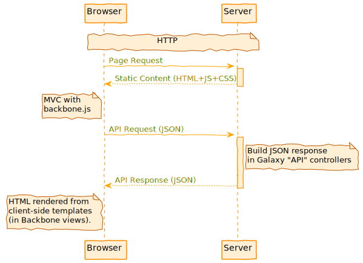
Speaker Notes
Workflow, Data Libraries, Visualization, History, Tool Menu, Many Grids, User and preference management.
class: white
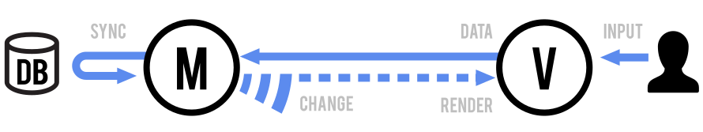
Backbone MVC
Speaker Notes
Admin things, Reports and Tool Shed Web app
Galaxy WSGI
class: enlarge150
Why not just Django?
We do build on many of the same standards, concepts, and libraries - the entire stack isn’t custom code but there is a non-trivial web framework defined in “Galaxy”.
The Galaxy community likes Django and uses it to build newer webapps, Galaxy simply predates it and has evolved its own framework.
Key Points
- Galaxy runs out of the box and fetches all needed dependencies.
- Running Galaxy in production requires configuration.
- The architecture is designed to be pluggable and extensible.
- Learn more about different Galaxy aspects in our [development section](/topics/dev/).
Thank you!
This material is the result of a collaborative work. Thanks to the Galaxy Training Network and all the contributors!
Tutorial Content is licensed under
Creative Commons Attribution 4.0 International License.